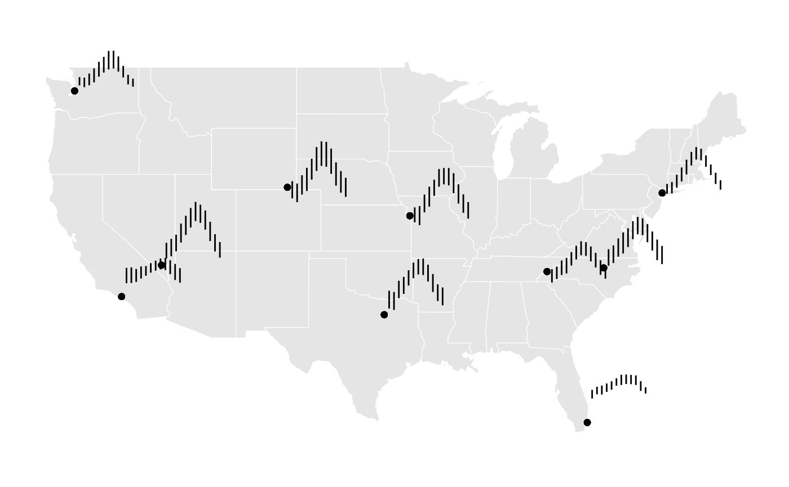
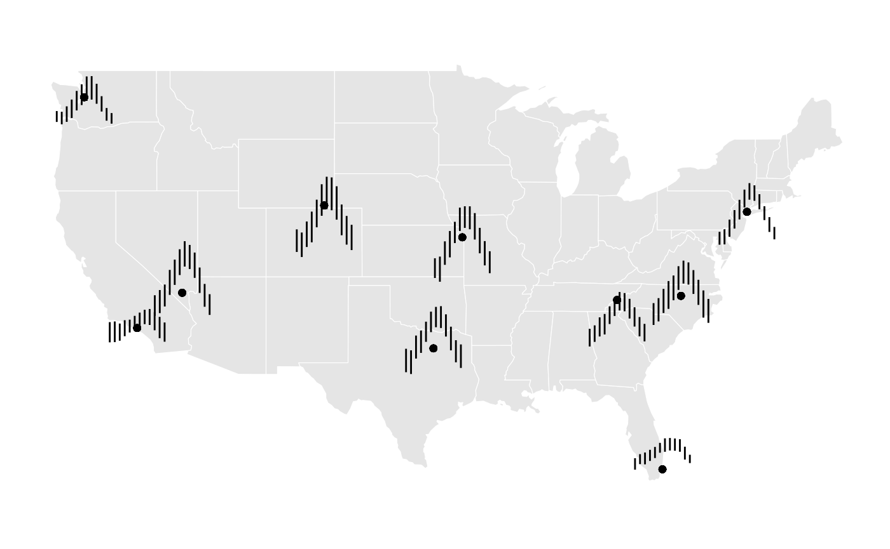

GeomSegmentGlyph
Vignette Author
GeomSegmentGlyph.Rmd
library(stglpyhs)
library(dplyr)
#>
#> Attaching package: 'dplyr'
#> The following objects are masked from 'package:stats':
#>
#> filter, lag
#> The following objects are masked from 'package:base':
#>
#> intersect, setdiff, setequal, unionGeomSegmentGlyph
Glyph Maps allow data to be visualized across geographic regions and different periods of time (see cubble for more information). Line Segment Glyphs extend this by adding further options to visualize multivariate spatio-temporal data. The aesthetics are similar to that of geom_segment but with x and y major variables in order to designate glyph placement.
Monthly Temperatures Across the US
The National Oceanica and Atmosphere Administration (NOAA) provides
weather data from stations all over the US. The stations
dataset contains climate variables such as prerciptation, temperature,
and elevation from 10 different weather stations for every day from 2020
to 2023.
stations
#> # A tibble: 43,551 × 12
#> id long lat elev name wmo_id date prcp tmax tmin month year
#> <chr> <dbl> <dbl> <dbl> <chr> <chr> <date> <dbl> <dbl> <dbl> <dbl> <dbl>
#> 1 USC0… -83.4 35.7 1979. MT L… "" 2020-01-01 0 -1.1 -8.9 1 2020
#> 2 USC0… -83.4 35.7 1979. MT L… "" 2020-01-02 0 2.2 -8.9 1 2020
#> 3 USC0… -83.4 35.7 1979. MT L… "" 2020-01-03 356 8.3 1.1 1 2020
#> 4 USC0… -83.4 35.7 1979. MT L… "" 2020-01-04 178 7.8 1.7 1 2020
#> 5 USC0… -83.4 35.7 1979. MT L… "" 2020-01-05 3 1.7 -10.6 1 2020
#> 6 USC0… -83.4 35.7 1979. MT L… "" 2020-01-06 0 -0.6 -10 1 2020
#> 7 USC0… -83.4 35.7 1979. MT L… "" 2020-01-07 51 1.1 -7.2 1 2020
#> 8 USC0… -83.4 35.7 1979. MT L… "" 2020-01-08 76 -1.1 -9.4 1 2020
#> 9 USC0… -83.4 35.7 1979. MT L… "" 2020-01-09 0 -1.1 -8.9 1 2020
#> 10 USC0… -83.4 35.7 1979. MT L… "" 2020-01-10 5 2.8 -2.8 1 2020
#> # ℹ 43,541 more rowsFor this example, we are interesting in finding out the average
minimum and maximum temperature per month across all days and all years
per each station. We do this by using the dplyr functions
group_by and summarise
grouped <- stations |>
group_by(month, name, long, lat) |>
summarise(
avgmin = mean(tmin, na.rm = TRUE),
avgmax = mean(tmax, na.rm = TRUE)
)
#> `summarise()` has grouped output by 'month', 'name', 'long'. You can override
#> using the `.groups` argument.With the default rescaling parameters, this is the resulting geom segment glyph along with a geom_point to help illustrate the station location that each segment glyph corresponds to.
ggplot(data = grouped) +
geom_sf(data = mainland_us, color = "white") +
ggthemes::theme_map() +
geom_point(aes(x = long, y = lat)) +
geom_segment_glyph(
width = 0.4,
height = 0.1,
aes(
x_major = long,
y_major = lat,
x_minor = month,
y_minor = avgmin,
yend_minor = avgmax)
) 
#> [1] "Data in draw_panel:"
#> x_major y_major x_minor y_minor yend_minor PANEL group x
#> 1 -104.8061 41.1519 1 -7.1758065 4.003226 1 -1 -104.4061
#> 2 -96.8358 32.8383 1 4.0411290 15.630645 1 -1 -96.4358
#> 3 -94.7308 39.2975 1 -4.2766129 5.467742 1 -1 -94.3308
#> 4 -115.1633 36.0719 1 4.4008065 14.591129 1 -1 -114.7633
#> 5 -80.1333 25.8064 1 15.6458824 21.297015 1 -1 -79.7333
#> 6 -83.4411 35.6550 1 -7.1739837 1.573171 1 -1 -83.0411
#> 7 -73.9692 40.7789 1 -0.4153226 5.941935 1 -1 -73.5692
#> 8 -78.7819 35.8922 1 1.4483871 12.233065 1 -1 -78.3819
#> 9 -118.4472 34.0211 1 8.7532258 18.745968 1 -1 -118.0472
#> 10 -122.3144 47.4447 1 3.6129032 8.995161 1 -1 -121.9144
#> 11 -104.8061 41.1519 2 -9.6707965 2.438938 1 -1 -104.0061
#> 12 -96.8358 32.8383 2 3.1477876 14.864602 1 -1 -96.0358
#> 13 -94.7308 39.2975 2 -6.1265487 6.297345 1 -1 -93.9308
#> 14 -115.1633 36.0719 2 5.7681416 17.174336 1 -1 -114.3633
#> 15 -80.1333 25.8064 2 18.3688312 23.305000 1 -1 -79.3333
#> 16 -83.4411 35.6550 2 -4.8849558 3.246903 1 -1 -82.6411
#> 17 -73.9692 40.7789 2 -0.2584071 7.202655 1 -1 -73.1692
#> 18 -78.7819 35.8922 2 3.1973451 14.705310 1 -1 -77.9819
#> 19 -118.4472 34.0211 2 8.8637168 19.070796 1 -1 -117.6472
#> 20 -122.3144 47.4447 2 2.4442478 8.659292 1 -1 -121.5144
#> 21 -104.8061 41.1519 3 -4.7177419 7.882258 1 -1 -103.6061
#> 22 -96.8358 32.8383 3 10.7903226 22.158871 1 -1 -95.6358
#> 23 -94.7308 39.2975 3 2.2233871 13.829839 1 -1 -93.5308
#> 24 -115.1633 36.0719 3 9.0580645 19.887097 1 -1 -113.9633
#> 25 -80.1333 25.8064 3 18.2642857 24.114286 1 -1 -78.9333
#> 26 -83.4411 35.6550 3 -2.2252033 7.209756 1 -1 -82.2411
#> 27 -73.9692 40.7789 3 3.5129032 11.987903 1 -1 -72.7692
#> 28 -78.7819 35.8922 3 7.3500000 19.262903 1 -1 -77.5819
#> 29 -118.4472 34.0211 3 9.5580645 18.042742 1 -1 -117.2472
#> 30 -122.3144 47.4447 3 3.6451613 11.325806 1 -1 -121.1144
#> 31 -104.8061 41.1519 4 -2.4041667 12.762500 1 -1 -103.2061
#> 32 -96.8358 32.8383 4 13.5908333 24.663333 1 -1 -95.2358
#> 33 -94.7308 39.2975 4 5.9133333 18.950833 1 -1 -93.1308
#> 34 -115.1633 36.0719 4 14.7758333 27.131667 1 -1 -113.5633
#> 35 -80.1333 25.8064 4 19.9532468 25.436538 1 -1 -78.5333
#> 36 -83.4411 35.6550 4 -1.2291667 8.880000 1 -1 -81.8411
#> 37 -73.9692 40.7789 4 7.5641667 16.680833 1 -1 -72.3692
#> 38 -78.7819 35.8922 4 9.4033333 23.136667 1 -1 -77.1819
#> 39 -118.4472 34.0211 4 11.7875000 19.688333 1 -1 -116.8472
#> 40 -122.3144 47.4447 4 5.5525000 14.690000 1 -1 -120.7144
#> 41 -104.8061 41.1519 5 5.0169355 18.666935 1 -1 -102.8061
#> 42 -96.8358 32.8383 5 19.0500000 29.016129 1 -1 -94.8358
#> 43 -94.7308 39.2975 5 12.9806452 23.483871 1 -1 -92.7308
#> 44 -115.1633 36.0719 5 19.7137097 32.214516 1 -1 -113.1633
#> 45 -80.1333 25.8064 5 21.3820225 26.862921 1 -1 -78.1333
#> 46 -83.4411 35.6550 5 3.9280992 12.658678 1 -1 -81.4411
#> 47 -73.9692 40.7789 5 12.0790323 21.775000 1 -1 -71.9692
#> 48 -78.7819 35.8922 5 13.6516129 25.886290 1 -1 -76.7819
#> 49 -118.4472 34.0211 5 13.6120968 19.958871 1 -1 -116.4472
#> 50 -122.3144 47.4447 5 9.3056452 18.942742 1 -1 -120.3144
#> 51 -104.8061 41.1519 6 10.7041667 26.294167 1 -1 -102.4061
#> 52 -96.8358 32.8383 6 23.8350000 33.981667 1 -1 -94.4358
#> 53 -94.7308 39.2975 6 18.9625000 30.493333 1 -1 -92.3308
#> 54 -115.1633 36.0719 6 24.5741667 37.331667 1 -1 -112.7633
#> 55 -80.1333 25.8064 6 24.0058824 28.863529 1 -1 -77.7333
#> 56 -83.4411 35.6550 6 7.8983333 16.807500 1 -1 -81.0411
#> 57 -73.9692 40.7789 6 18.0108333 26.809167 1 -1 -71.5692
#> 58 -78.7819 35.8922 6 18.7783333 30.475833 1 -1 -76.3819
#> 59 -118.4472 34.0211 6 15.6420168 21.842857 1 -1 -116.0472
#> 60 -122.3144 47.4447 6 11.9608333 22.205833 1 -1 -119.9144
#> 61 -104.8061 41.1519 7 13.9806452 30.002419 1 -1 -102.0061
#> 62 -96.8358 32.8383 7 26.2733871 36.322581 1 -1 -94.0358
#> 63 -94.7308 39.2975 7 20.4798387 31.171774 1 -1 -91.9308
#> 64 -115.1633 36.0719 7 28.7782258 41.312097 1 -1 -112.3633
#> 65 -80.1333 25.8064 7 24.4744681 31.104255 1 -1 -77.3333
#> 66 -83.4411 35.6550 7 10.6258065 19.743548 1 -1 -80.6411
#> 67 -73.9692 40.7789 7 21.8346774 30.016129 1 -1 -71.1692
#> 68 -78.7819 35.8922 7 21.9112903 33.243548 1 -1 -75.9819
#> 69 -118.4472 34.0211 7 16.9225806 23.449194 1 -1 -115.6472
#> 70 -122.3144 47.4447 7 14.0048387 26.091129 1 -1 -119.5144
#> 71 -104.8061 41.1519 8 13.4403226 29.668548 1 -1 -101.6061
#> 72 -96.8358 32.8383 8 25.8870968 36.679839 1 -1 -93.6358
#> 73 -94.7308 39.2975 8 19.8032258 31.141935 1 -1 -91.5308
#> 74 -115.1633 36.0719 8 27.5685484 39.463710 1 -1 -111.9633
#> 75 -80.1333 25.8064 8 25.1050847 31.277966 1 -1 -76.9333
#> 76 -83.4411 35.6550 8 10.2225806 19.213710 1 -1 -80.2411
#> 77 -73.9692 40.7789 8 21.2846774 28.922581 1 -1 -70.7692
#> 78 -78.7819 35.8922 8 21.3854839 32.363710 1 -1 -75.5819
#> 79 -118.4472 34.0211 8 17.7419355 24.849194 1 -1 -115.2472
#> 80 -122.3144 47.4447 8 14.6612903 26.250806 1 -1 -119.1144
#> 81 -104.8061 41.1519 9 8.8033333 25.290000 1 -1 -101.2061
#> 82 -96.8358 32.8383 9 21.6675000 32.644167 1 -1 -93.2358
#> 83 -94.7308 39.2975 9 14.7258333 27.791667 1 -1 -91.1308
#> 84 -115.1633 36.0719 9 23.1958333 35.691667 1 -1 -111.5633
#> 85 -80.1333 25.8064 9 24.9796610 31.044068 1 -1 -76.5333
#> 86 -83.4411 35.6550 9 6.6525000 16.373333 1 -1 -79.8411
#> 87 -73.9692 40.7789 9 17.1275000 24.537500 1 -1 -70.3692
#> 88 -78.7819 35.8922 9 16.7791667 28.550833 1 -1 -75.1819
#> 89 -118.4472 34.0211 9 17.3450000 25.225000 1 -1 -114.8472
#> 90 -122.3144 47.4447 9 12.5958333 22.476667 1 -1 -118.7144
#> 91 -104.8061 41.1519 10 1.0975806 16.265323 1 -1 -100.8061
#> 92 -96.8358 32.8383 10 14.8459677 26.536290 1 -1 -92.8358
#> 93 -94.7308 39.2975 10 7.9250000 20.505645 1 -1 -90.7308
#> 94 -115.1633 36.0719 10 15.7467742 28.303226 1 -1 -111.1633
#> 95 -80.1333 25.8064 10 24.4852459 30.681967 1 -1 -76.1333
#> 96 -83.4411 35.6550 10 2.6747899 12.195798 1 -1 -79.4411
#> 97 -73.9692 40.7789 10 11.7596774 18.591129 1 -1 -69.9692
#> 98 -78.7819 35.8922 10 11.3693548 23.762903 1 -1 -74.7819
#> 99 -118.4472 34.0211 10 14.7145161 23.708065 1 -1 -114.4472
#> 100 -122.3144 47.4447 10 8.7604839 16.333065 1 -1 -118.3144
#> 101 -104.8061 41.1519 11 -3.5366667 10.621667 1 -1 -100.4061
#> 102 -96.8358 32.8383 11 8.9383333 19.856667 1 -1 -92.4358
#> 103 -94.7308 39.2975 11 1.9450000 13.950833 1 -1 -90.3308
#> 104 -115.1633 36.0719 11 8.9158333 20.188333 1 -1 -110.7633
#> 105 -80.1333 25.8064 11 20.6203390 26.980702 1 -1 -75.7333
#> 106 -83.4411 35.6550 11 -2.1579832 7.365546 1 -1 -79.0411
#> 107 -73.9692 40.7789 11 5.8991667 13.210833 1 -1 -69.5692
#> 108 -78.7819 35.8922 11 5.0741667 18.510000 1 -1 -74.3819
#> 109 -118.4472 34.0211 11 10.8226087 21.331304 1 -1 -114.0472
#> 110 -122.3144 47.4447 11 4.2316667 10.495000 1 -1 -117.9144
#> 111 -104.8061 41.1519 12 -6.2387097 6.242742 1 -1 -100.0061
#> 112 -96.8358 32.8383 12 6.1516129 17.770968 1 -1 -92.0358
#> 113 -94.7308 39.2975 12 -1.9000000 8.937097 1 -1 -89.9308
#> 114 -115.1633 36.0719 12 4.8814516 15.125806 1 -1 -110.3633
#> 115 -80.1333 25.8064 12 18.9000000 22.996610 1 -1 -75.3333
#> 116 -83.4411 35.6550 12 -4.6512195 3.988618 1 -1 -78.6411
#> 117 -73.9692 40.7789 12 2.2346774 8.362097 1 -1 -69.1692
#> 118 -78.7819 35.8922 12 2.4975806 14.313710 1 -1 -73.9819
#> 119 -118.4472 34.0211 12 9.0685484 18.570161 1 -1 -113.6472
#> 120 -122.3144 47.4447 12 2.7733871 7.994355 1 -1 -117.5144
#> xend y yend colour linewidth linetype width height alpha
#> 1 -104.4061 40.43432 41.55222 black 0.5 1 0.4 0.1 1
#> 2 -96.4358 33.24241 34.40136 black 0.5 1 0.4 0.1 1
#> 3 -94.3308 38.86984 39.84427 black 0.5 1 0.4 0.1 1
#> 4 -114.7633 36.51198 37.53101 black 0.5 1 0.4 0.1 1
#> 5 -79.7333 27.37099 27.93610 black 0.5 1 0.4 0.1 1
#> 6 -83.0411 34.93760 35.81232 black 0.5 1 0.4 0.1 1
#> 7 -73.5692 40.73737 41.37309 black 0.5 1 0.4 0.1 1
#> 8 -78.3819 36.03704 37.11551 black 0.5 1 0.4 0.1 1
#> 9 -118.0472 34.89642 35.89570 black 0.5 1 0.4 0.1 1
#> 10 -121.9144 47.80599 48.34422 black 0.5 1 0.4 0.1 1
#> 11 -104.0061 40.18482 41.39579 black 0.5 1 0.4 0.1 1
#> 12 -96.0358 33.15308 34.32476 black 0.5 1 0.4 0.1 1
#> 13 -93.9308 38.68485 39.92723 black 0.5 1 0.4 0.1 1
#> 14 -114.3633 36.64871 37.78933 black 0.5 1 0.4 0.1 1
#> 15 -79.3333 27.64328 28.13690 black 0.5 1 0.4 0.1 1
#> 16 -82.6411 35.16650 35.97969 black 0.5 1 0.4 0.1 1
#> 17 -73.1692 40.75306 41.49917 black 0.5 1 0.4 0.1 1
#> 18 -77.9819 36.21193 37.36273 black 0.5 1 0.4 0.1 1
#> 19 -117.6472 34.90747 35.92818 black 0.5 1 0.4 0.1 1
#> 20 -121.5144 47.68912 48.31063 black 0.5 1 0.4 0.1 1
#> 21 -103.6061 40.68013 41.94013 black 0.5 1 0.4 0.1 1
#> 22 -95.6358 33.91733 35.05419 black 0.5 1 0.4 0.1 1
#> 23 -93.5308 39.51984 40.68048 black 0.5 1 0.4 0.1 1
#> 24 -113.9633 36.97771 38.06061 black 0.5 1 0.4 0.1 1
#> 25 -78.9333 27.63283 28.21783 black 0.5 1 0.4 0.1 1
#> 26 -82.2411 35.43248 36.37598 black 0.5 1 0.4 0.1 1
#> 27 -72.7692 41.13019 41.97769 black 0.5 1 0.4 0.1 1
#> 28 -77.5819 36.62720 37.81849 black 0.5 1 0.4 0.1 1
#> 29 -117.2472 34.97691 35.82537 black 0.5 1 0.4 0.1 1
#> 30 -121.1144 47.80922 48.57728 black 0.5 1 0.4 0.1 1
#> 31 -103.2061 40.91148 42.42815 black 0.5 1 0.4 0.1 1
#> 32 -95.2358 34.19738 35.30463 black 0.5 1 0.4 0.1 1
#> 33 -93.1308 39.88883 41.19258 black 0.5 1 0.4 0.1 1
#> 34 -113.5633 37.54948 38.78507 black 0.5 1 0.4 0.1 1
#> 35 -78.5333 27.80172 28.35005 black 0.5 1 0.4 0.1 1
#> 36 -81.8411 35.53208 36.54300 black 0.5 1 0.4 0.1 1
#> 37 -72.3692 41.53532 42.44698 black 0.5 1 0.4 0.1 1
#> 38 -77.1819 36.83253 38.20587 black 0.5 1 0.4 0.1 1
#> 39 -116.8472 35.19985 35.98993 black 0.5 1 0.4 0.1 1
#> 40 -120.7144 47.99995 48.91370 black 0.5 1 0.4 0.1 1
#> 41 -102.8061 41.65359 43.01859 black 0.5 1 0.4 0.1 1
#> 42 -94.8358 34.74330 35.73991 black 0.5 1 0.4 0.1 1
#> 43 -92.7308 40.59556 41.64589 black 0.5 1 0.4 0.1 1
#> 44 -113.1633 38.04327 39.29335 black 0.5 1 0.4 0.1 1
#> 45 -78.1333 27.94460 28.49269 black 0.5 1 0.4 0.1 1
#> 46 -81.4411 36.04781 36.92087 black 0.5 1 0.4 0.1 1
#> 47 -71.9692 41.98680 42.95640 black 0.5 1 0.4 0.1 1
#> 48 -76.7819 37.25736 38.48083 black 0.5 1 0.4 0.1 1
#> 49 -116.4472 35.38231 36.01699 black 0.5 1 0.4 0.1 1
#> 50 -120.3144 48.37526 49.33897 black 0.5 1 0.4 0.1 1
#> 51 -102.4061 42.22232 43.78132 black 0.5 1 0.4 0.1 1
#> 52 -94.4358 35.22180 36.23647 black 0.5 1 0.4 0.1 1
#> 53 -92.3308 41.19375 42.34683 black 0.5 1 0.4 0.1 1
#> 54 -112.7633 38.52932 39.80507 black 0.5 1 0.4 0.1 1
#> 55 -77.7333 28.20699 28.69275 black 0.5 1 0.4 0.1 1
#> 56 -81.0411 36.44483 37.33575 black 0.5 1 0.4 0.1 1
#> 57 -71.5692 42.57998 43.45982 black 0.5 1 0.4 0.1 1
#> 58 -76.3819 37.77003 38.93978 black 0.5 1 0.4 0.1 1
#> 59 -116.0472 35.58530 36.20539 black 0.5 1 0.4 0.1 1
#> 60 -119.9144 48.64078 49.66528 black 0.5 1 0.4 0.1 1
#> 61 -102.0061 42.54996 44.15214 black 0.5 1 0.4 0.1 1
#> 62 -94.0358 35.46564 36.47056 black 0.5 1 0.4 0.1 1
#> 63 -91.9308 41.34548 42.41468 black 0.5 1 0.4 0.1 1
#> 64 -112.3633 38.94972 40.20311 black 0.5 1 0.4 0.1 1
#> 65 -77.3333 28.25385 28.91683 black 0.5 1 0.4 0.1 1
#> 66 -80.6411 36.71758 37.62935 black 0.5 1 0.4 0.1 1
#> 67 -71.1692 42.96237 43.78051 black 0.5 1 0.4 0.1 1
#> 68 -75.9819 38.08333 39.21655 black 0.5 1 0.4 0.1 1
#> 69 -115.6472 35.71336 36.36602 black 0.5 1 0.4 0.1 1
#> 70 -119.5144 48.84518 50.05381 black 0.5 1 0.4 0.1 1
#> 71 -101.6061 42.49593 44.11875 black 0.5 1 0.4 0.1 1
#> 72 -93.6358 35.42701 36.50628 black 0.5 1 0.4 0.1 1
#> 73 -91.5308 41.27782 42.41169 black 0.5 1 0.4 0.1 1
#> 74 -111.9633 38.82875 40.01827 black 0.5 1 0.4 0.1 1
#> 75 -76.9333 28.31691 28.93420 black 0.5 1 0.4 0.1 1
#> 76 -80.2411 36.67726 37.57637 black 0.5 1 0.4 0.1 1
#> 77 -70.7692 42.90737 43.67116 black 0.5 1 0.4 0.1 1
#> 78 -75.5819 38.03075 39.12857 black 0.5 1 0.4 0.1 1
#> 79 -115.2472 35.79529 36.50602 black 0.5 1 0.4 0.1 1
#> 80 -119.1144 48.91083 50.06978 black 0.5 1 0.4 0.1 1
#> 81 -101.2061 42.03223 43.68090 black 0.5 1 0.4 0.1 1
#> 82 -93.2358 35.00505 36.10272 black 0.5 1 0.4 0.1 1
#> 83 -91.1308 40.77008 42.07667 black 0.5 1 0.4 0.1 1
#> 84 -111.5633 38.39148 39.64107 black 0.5 1 0.4 0.1 1
#> 85 -76.5333 28.30437 28.91081 black 0.5 1 0.4 0.1 1
#> 86 -79.8411 36.32025 37.29233 black 0.5 1 0.4 0.1 1
#> 87 -70.3692 42.49165 43.23265 black 0.5 1 0.4 0.1 1
#> 88 -75.1819 37.57012 38.74728 black 0.5 1 0.4 0.1 1
#> 89 -114.8472 35.75560 36.54360 black 0.5 1 0.4 0.1 1
#> 90 -118.7144 48.70428 49.69237 black 0.5 1 0.4 0.1 1
#> 91 -100.8061 41.26166 42.77843 black 0.5 1 0.4 0.1 1
#> 92 -92.8358 34.32290 35.49193 black 0.5 1 0.4 0.1 1
#> 93 -90.7308 40.09000 41.34806 black 0.5 1 0.4 0.1 1
#> 94 -111.1633 37.64658 38.90222 black 0.5 1 0.4 0.1 1
#> 95 -76.1333 28.25492 28.87460 black 0.5 1 0.4 0.1 1
#> 96 -79.4411 35.92248 36.87458 black 0.5 1 0.4 0.1 1
#> 97 -69.9692 41.95487 42.63801 black 0.5 1 0.4 0.1 1
#> 98 -74.7819 37.02914 38.26849 black 0.5 1 0.4 0.1 1
#> 99 -114.4472 35.49255 36.39191 black 0.5 1 0.4 0.1 1
#> 100 -118.3144 48.32075 49.07801 black 0.5 1 0.4 0.1 1
#> 101 -100.4061 40.79823 42.21407 black 0.5 1 0.4 0.1 1
#> 102 -92.4358 33.73213 34.82397 black 0.5 1 0.4 0.1 1
#> 103 -90.3308 39.49200 40.69258 black 0.5 1 0.4 0.1 1
#> 104 -110.7633 36.96348 38.09073 black 0.5 1 0.4 0.1 1
#> 105 -75.7333 27.86843 28.50447 black 0.5 1 0.4 0.1 1
#> 106 -79.0411 35.43920 36.39155 black 0.5 1 0.4 0.1 1
#> 107 -69.5692 41.36882 42.09998 black 0.5 1 0.4 0.1 1
#> 108 -74.3819 36.39962 37.74320 black 0.5 1 0.4 0.1 1
#> 109 -114.0472 35.10336 36.15423 black 0.5 1 0.4 0.1 1
#> 110 -117.9144 47.86787 48.49420 black 0.5 1 0.4 0.1 1
#> 111 -100.0061 40.52803 41.77617 black 0.5 1 0.4 0.1 1
#> 112 -92.0358 33.45346 34.61540 black 0.5 1 0.4 0.1 1
#> 113 -89.9308 39.10750 40.19121 black 0.5 1 0.4 0.1 1
#> 114 -110.3633 36.56005 37.58448 black 0.5 1 0.4 0.1 1
#> 115 -75.3333 27.69640 28.10606 black 0.5 1 0.4 0.1 1
#> 116 -78.6411 35.18988 36.05386 black 0.5 1 0.4 0.1 1
#> 117 -69.1692 41.00237 41.61511 black 0.5 1 0.4 0.1 1
#> 118 -73.9819 36.14196 37.32357 black 0.5 1 0.4 0.1 1
#> 119 -113.6472 34.92795 35.87812 black 0.5 1 0.4 0.1 1
#> 120 -117.5144 47.72204 48.24414 black 0.5 1 0.4 0.1 1
#> global_rescale x_scale y_scale
#> 1 TRUE function (x) , x function (x) , x
#> 2 TRUE function (x) , x function (x) , x
#> 3 TRUE function (x) , x function (x) , x
#> 4 TRUE function (x) , x function (x) , x
#> 5 TRUE function (x) , x function (x) , x
#> 6 TRUE function (x) , x function (x) , x
#> 7 TRUE function (x) , x function (x) , x
#> 8 TRUE function (x) , x function (x) , x
#> 9 TRUE function (x) , x function (x) , x
#> 10 TRUE function (x) , x function (x) , x
#> 11 TRUE function (x) , x function (x) , x
#> 12 TRUE function (x) , x function (x) , x
#> 13 TRUE function (x) , x function (x) , x
#> 14 TRUE function (x) , x function (x) , x
#> 15 TRUE function (x) , x function (x) , x
#> 16 TRUE function (x) , x function (x) , x
#> 17 TRUE function (x) , x function (x) , x
#> 18 TRUE function (x) , x function (x) , x
#> 19 TRUE function (x) , x function (x) , x
#> 20 TRUE function (x) , x function (x) , x
#> 21 TRUE function (x) , x function (x) , x
#> 22 TRUE function (x) , x function (x) , x
#> 23 TRUE function (x) , x function (x) , x
#> 24 TRUE function (x) , x function (x) , x
#> 25 TRUE function (x) , x function (x) , x
#> 26 TRUE function (x) , x function (x) , x
#> 27 TRUE function (x) , x function (x) , x
#> 28 TRUE function (x) , x function (x) , x
#> 29 TRUE function (x) , x function (x) , x
#> 30 TRUE function (x) , x function (x) , x
#> 31 TRUE function (x) , x function (x) , x
#> 32 TRUE function (x) , x function (x) , x
#> 33 TRUE function (x) , x function (x) , x
#> 34 TRUE function (x) , x function (x) , x
#> 35 TRUE function (x) , x function (x) , x
#> 36 TRUE function (x) , x function (x) , x
#> 37 TRUE function (x) , x function (x) , x
#> 38 TRUE function (x) , x function (x) , x
#> 39 TRUE function (x) , x function (x) , x
#> 40 TRUE function (x) , x function (x) , x
#> 41 TRUE function (x) , x function (x) , x
#> 42 TRUE function (x) , x function (x) , x
#> 43 TRUE function (x) , x function (x) , x
#> 44 TRUE function (x) , x function (x) , x
#> 45 TRUE function (x) , x function (x) , x
#> 46 TRUE function (x) , x function (x) , x
#> 47 TRUE function (x) , x function (x) , x
#> 48 TRUE function (x) , x function (x) , x
#> 49 TRUE function (x) , x function (x) , x
#> 50 TRUE function (x) , x function (x) , x
#> 51 TRUE function (x) , x function (x) , x
#> 52 TRUE function (x) , x function (x) , x
#> 53 TRUE function (x) , x function (x) , x
#> 54 TRUE function (x) , x function (x) , x
#> 55 TRUE function (x) , x function (x) , x
#> 56 TRUE function (x) , x function (x) , x
#> 57 TRUE function (x) , x function (x) , x
#> 58 TRUE function (x) , x function (x) , x
#> 59 TRUE function (x) , x function (x) , x
#> 60 TRUE function (x) , x function (x) , x
#> 61 TRUE function (x) , x function (x) , x
#> 62 TRUE function (x) , x function (x) , x
#> 63 TRUE function (x) , x function (x) , x
#> 64 TRUE function (x) , x function (x) , x
#> 65 TRUE function (x) , x function (x) , x
#> 66 TRUE function (x) , x function (x) , x
#> 67 TRUE function (x) , x function (x) , x
#> 68 TRUE function (x) , x function (x) , x
#> 69 TRUE function (x) , x function (x) , x
#> 70 TRUE function (x) , x function (x) , x
#> 71 TRUE function (x) , x function (x) , x
#> 72 TRUE function (x) , x function (x) , x
#> 73 TRUE function (x) , x function (x) , x
#> 74 TRUE function (x) , x function (x) , x
#> 75 TRUE function (x) , x function (x) , x
#> 76 TRUE function (x) , x function (x) , x
#> 77 TRUE function (x) , x function (x) , x
#> 78 TRUE function (x) , x function (x) , x
#> 79 TRUE function (x) , x function (x) , x
#> 80 TRUE function (x) , x function (x) , x
#> 81 TRUE function (x) , x function (x) , x
#> 82 TRUE function (x) , x function (x) , x
#> 83 TRUE function (x) , x function (x) , x
#> 84 TRUE function (x) , x function (x) , x
#> 85 TRUE function (x) , x function (x) , x
#> 86 TRUE function (x) , x function (x) , x
#> 87 TRUE function (x) , x function (x) , x
#> 88 TRUE function (x) , x function (x) , x
#> 89 TRUE function (x) , x function (x) , x
#> 90 TRUE function (x) , x function (x) , x
#> 91 TRUE function (x) , x function (x) , x
#> 92 TRUE function (x) , x function (x) , x
#> 93 TRUE function (x) , x function (x) , x
#> 94 TRUE function (x) , x function (x) , x
#> 95 TRUE function (x) , x function (x) , x
#> 96 TRUE function (x) , x function (x) , x
#> 97 TRUE function (x) , x function (x) , x
#> 98 TRUE function (x) , x function (x) , x
#> 99 TRUE function (x) , x function (x) , x
#> 100 TRUE function (x) , x function (x) , x
#> 101 TRUE function (x) , x function (x) , x
#> 102 TRUE function (x) , x function (x) , x
#> 103 TRUE function (x) , x function (x) , x
#> 104 TRUE function (x) , x function (x) , x
#> 105 TRUE function (x) , x function (x) , x
#> 106 TRUE function (x) , x function (x) , x
#> 107 TRUE function (x) , x function (x) , x
#> 108 TRUE function (x) , x function (x) , x
#> 109 TRUE function (x) , x function (x) , x
#> 110 TRUE function (x) , x function (x) , x
#> 111 TRUE function (x) , x function (x) , x
#> 112 TRUE function (x) , x function (x) , x
#> 113 TRUE function (x) , x function (x) , x
#> 114 TRUE function (x) , x function (x) , x
#> 115 TRUE function (x) , x function (x) , x
#> 116 TRUE function (x) , x function (x) , x
#> 117 TRUE function (x) , x function (x) , x
#> 118 TRUE function (x) , x function (x) , x
#> 119 TRUE function (x) , x function (x) , x
#> 120 TRUE function (x) , x function (x) , xGeomSegmentGlyph additionally offers ways to rescale the glyphs. Here, we can specify rescale11x as the preferred rescaling for x to center the glyph on the station.
ggplot(data = grouped) +
geom_sf(data = mainland_us, color = "white") +
ggthemes::theme_map() +
geom_point(aes(x = long, y = lat)) +
geom_segment_glyph(
x_scale = rescale11x,
width = 2,
height = 0.1,
aes(
x_major = long,
y_major = lat,
x_minor = month,
y_minor = avgmin,
yend_minor = avgmax)
) #> [1] "Data in draw_panel:"
#> x_major y_major x_minor y_minor yend_minor PANEL group x
#> 1 -104.8061 41.1519 -1.00000000 -7.1758065 4.003226 1 -1 -106.80610
#> 2 -96.8358 32.8383 -1.00000000 4.0411290 15.630645 1 -1 -98.83580
#> 3 -94.7308 39.2975 -1.00000000 -4.2766129 5.467742 1 -1 -96.73080
#> 4 -115.1633 36.0719 -1.00000000 4.4008065 14.591129 1 -1 -117.16330
#> 5 -80.1333 25.8064 -1.00000000 15.6458824 21.297015 1 -1 -82.13330
#> 6 -83.4411 35.6550 -1.00000000 -7.1739837 1.573171 1 -1 -85.44110
#> 7 -73.9692 40.7789 -1.00000000 -0.4153226 5.941935 1 -1 -75.96920
#> 8 -78.7819 35.8922 -1.00000000 1.4483871 12.233065 1 -1 -80.78190
#> 9 -118.4472 34.0211 -1.00000000 8.7532258 18.745968 1 -1 -120.44720
#> 10 -122.3144 47.4447 -1.00000000 3.6129032 8.995161 1 -1 -124.31440
#> 11 -104.8061 41.1519 -0.81818182 -9.6707965 2.438938 1 -1 -106.44246
#> 12 -96.8358 32.8383 -0.81818182 3.1477876 14.864602 1 -1 -98.47216
#> 13 -94.7308 39.2975 -0.81818182 -6.1265487 6.297345 1 -1 -96.36716
#> 14 -115.1633 36.0719 -0.81818182 5.7681416 17.174336 1 -1 -116.79966
#> 15 -80.1333 25.8064 -0.81818182 18.3688312 23.305000 1 -1 -81.76966
#> 16 -83.4411 35.6550 -0.81818182 -4.8849558 3.246903 1 -1 -85.07746
#> 17 -73.9692 40.7789 -0.81818182 -0.2584071 7.202655 1 -1 -75.60556
#> 18 -78.7819 35.8922 -0.81818182 3.1973451 14.705310 1 -1 -80.41826
#> 19 -118.4472 34.0211 -0.81818182 8.8637168 19.070796 1 -1 -120.08356
#> 20 -122.3144 47.4447 -0.81818182 2.4442478 8.659292 1 -1 -123.95076
#> 21 -104.8061 41.1519 -0.63636364 -4.7177419 7.882258 1 -1 -106.07883
#> 22 -96.8358 32.8383 -0.63636364 10.7903226 22.158871 1 -1 -98.10853
#> 23 -94.7308 39.2975 -0.63636364 2.2233871 13.829839 1 -1 -96.00353
#> 24 -115.1633 36.0719 -0.63636364 9.0580645 19.887097 1 -1 -116.43603
#> 25 -80.1333 25.8064 -0.63636364 18.2642857 24.114286 1 -1 -81.40603
#> 26 -83.4411 35.6550 -0.63636364 -2.2252033 7.209756 1 -1 -84.71383
#> 27 -73.9692 40.7789 -0.63636364 3.5129032 11.987903 1 -1 -75.24193
#> 28 -78.7819 35.8922 -0.63636364 7.3500000 19.262903 1 -1 -80.05463
#> 29 -118.4472 34.0211 -0.63636364 9.5580645 18.042742 1 -1 -119.71993
#> 30 -122.3144 47.4447 -0.63636364 3.6451613 11.325806 1 -1 -123.58713
#> 31 -104.8061 41.1519 -0.45454545 -2.4041667 12.762500 1 -1 -105.71519
#> 32 -96.8358 32.8383 -0.45454545 13.5908333 24.663333 1 -1 -97.74489
#> 33 -94.7308 39.2975 -0.45454545 5.9133333 18.950833 1 -1 -95.63989
#> 34 -115.1633 36.0719 -0.45454545 14.7758333 27.131667 1 -1 -116.07239
#> 35 -80.1333 25.8064 -0.45454545 19.9532468 25.436538 1 -1 -81.04239
#> 36 -83.4411 35.6550 -0.45454545 -1.2291667 8.880000 1 -1 -84.35019
#> 37 -73.9692 40.7789 -0.45454545 7.5641667 16.680833 1 -1 -74.87829
#> 38 -78.7819 35.8922 -0.45454545 9.4033333 23.136667 1 -1 -79.69099
#> 39 -118.4472 34.0211 -0.45454545 11.7875000 19.688333 1 -1 -119.35629
#> 40 -122.3144 47.4447 -0.45454545 5.5525000 14.690000 1 -1 -123.22349
#> 41 -104.8061 41.1519 -0.27272727 5.0169355 18.666935 1 -1 -105.35155
#> 42 -96.8358 32.8383 -0.27272727 19.0500000 29.016129 1 -1 -97.38125
#> 43 -94.7308 39.2975 -0.27272727 12.9806452 23.483871 1 -1 -95.27625
#> 44 -115.1633 36.0719 -0.27272727 19.7137097 32.214516 1 -1 -115.70875
#> 45 -80.1333 25.8064 -0.27272727 21.3820225 26.862921 1 -1 -80.67875
#> 46 -83.4411 35.6550 -0.27272727 3.9280992 12.658678 1 -1 -83.98655
#> 47 -73.9692 40.7789 -0.27272727 12.0790323 21.775000 1 -1 -74.51465
#> 48 -78.7819 35.8922 -0.27272727 13.6516129 25.886290 1 -1 -79.32735
#> 49 -118.4472 34.0211 -0.27272727 13.6120968 19.958871 1 -1 -118.99265
#> 50 -122.3144 47.4447 -0.27272727 9.3056452 18.942742 1 -1 -122.85985
#> 51 -104.8061 41.1519 -0.09090909 10.7041667 26.294167 1 -1 -104.98792
#> 52 -96.8358 32.8383 -0.09090909 23.8350000 33.981667 1 -1 -97.01762
#> 53 -94.7308 39.2975 -0.09090909 18.9625000 30.493333 1 -1 -94.91262
#> 54 -115.1633 36.0719 -0.09090909 24.5741667 37.331667 1 -1 -115.34512
#> 55 -80.1333 25.8064 -0.09090909 24.0058824 28.863529 1 -1 -80.31512
#> 56 -83.4411 35.6550 -0.09090909 7.8983333 16.807500 1 -1 -83.62292
#> 57 -73.9692 40.7789 -0.09090909 18.0108333 26.809167 1 -1 -74.15102
#> 58 -78.7819 35.8922 -0.09090909 18.7783333 30.475833 1 -1 -78.96372
#> 59 -118.4472 34.0211 -0.09090909 15.6420168 21.842857 1 -1 -118.62902
#> 60 -122.3144 47.4447 -0.09090909 11.9608333 22.205833 1 -1 -122.49622
#> 61 -104.8061 41.1519 0.09090909 13.9806452 30.002419 1 -1 -104.62428
#> 62 -96.8358 32.8383 0.09090909 26.2733871 36.322581 1 -1 -96.65398
#> 63 -94.7308 39.2975 0.09090909 20.4798387 31.171774 1 -1 -94.54898
#> 64 -115.1633 36.0719 0.09090909 28.7782258 41.312097 1 -1 -114.98148
#> 65 -80.1333 25.8064 0.09090909 24.4744681 31.104255 1 -1 -79.95148
#> 66 -83.4411 35.6550 0.09090909 10.6258065 19.743548 1 -1 -83.25928
#> 67 -73.9692 40.7789 0.09090909 21.8346774 30.016129 1 -1 -73.78738
#> 68 -78.7819 35.8922 0.09090909 21.9112903 33.243548 1 -1 -78.60008
#> 69 -118.4472 34.0211 0.09090909 16.9225806 23.449194 1 -1 -118.26538
#> 70 -122.3144 47.4447 0.09090909 14.0048387 26.091129 1 -1 -122.13258
#> 71 -104.8061 41.1519 0.27272727 13.4403226 29.668548 1 -1 -104.26065
#> 72 -96.8358 32.8383 0.27272727 25.8870968 36.679839 1 -1 -96.29035
#> 73 -94.7308 39.2975 0.27272727 19.8032258 31.141935 1 -1 -94.18535
#> 74 -115.1633 36.0719 0.27272727 27.5685484 39.463710 1 -1 -114.61785
#> 75 -80.1333 25.8064 0.27272727 25.1050847 31.277966 1 -1 -79.58785
#> 76 -83.4411 35.6550 0.27272727 10.2225806 19.213710 1 -1 -82.89565
#> 77 -73.9692 40.7789 0.27272727 21.2846774 28.922581 1 -1 -73.42375
#> 78 -78.7819 35.8922 0.27272727 21.3854839 32.363710 1 -1 -78.23645
#> 79 -118.4472 34.0211 0.27272727 17.7419355 24.849194 1 -1 -117.90175
#> 80 -122.3144 47.4447 0.27272727 14.6612903 26.250806 1 -1 -121.76895
#> 81 -104.8061 41.1519 0.45454545 8.8033333 25.290000 1 -1 -103.89701
#> 82 -96.8358 32.8383 0.45454545 21.6675000 32.644167 1 -1 -95.92671
#> 83 -94.7308 39.2975 0.45454545 14.7258333 27.791667 1 -1 -93.82171
#> 84 -115.1633 36.0719 0.45454545 23.1958333 35.691667 1 -1 -114.25421
#> 85 -80.1333 25.8064 0.45454545 24.9796610 31.044068 1 -1 -79.22421
#> 86 -83.4411 35.6550 0.45454545 6.6525000 16.373333 1 -1 -82.53201
#> 87 -73.9692 40.7789 0.45454545 17.1275000 24.537500 1 -1 -73.06011
#> 88 -78.7819 35.8922 0.45454545 16.7791667 28.550833 1 -1 -77.87281
#> 89 -118.4472 34.0211 0.45454545 17.3450000 25.225000 1 -1 -117.53811
#> 90 -122.3144 47.4447 0.45454545 12.5958333 22.476667 1 -1 -121.40531
#> 91 -104.8061 41.1519 0.63636364 1.0975806 16.265323 1 -1 -103.53337
#> 92 -96.8358 32.8383 0.63636364 14.8459677 26.536290 1 -1 -95.56307
#> 93 -94.7308 39.2975 0.63636364 7.9250000 20.505645 1 -1 -93.45807
#> 94 -115.1633 36.0719 0.63636364 15.7467742 28.303226 1 -1 -113.89057
#> 95 -80.1333 25.8064 0.63636364 24.4852459 30.681967 1 -1 -78.86057
#> 96 -83.4411 35.6550 0.63636364 2.6747899 12.195798 1 -1 -82.16837
#> 97 -73.9692 40.7789 0.63636364 11.7596774 18.591129 1 -1 -72.69647
#> 98 -78.7819 35.8922 0.63636364 11.3693548 23.762903 1 -1 -77.50917
#> 99 -118.4472 34.0211 0.63636364 14.7145161 23.708065 1 -1 -117.17447
#> 100 -122.3144 47.4447 0.63636364 8.7604839 16.333065 1 -1 -121.04167
#> 101 -104.8061 41.1519 0.81818182 -3.5366667 10.621667 1 -1 -103.16974
#> 102 -96.8358 32.8383 0.81818182 8.9383333 19.856667 1 -1 -95.19944
#> 103 -94.7308 39.2975 0.81818182 1.9450000 13.950833 1 -1 -93.09444
#> 104 -115.1633 36.0719 0.81818182 8.9158333 20.188333 1 -1 -113.52694
#> 105 -80.1333 25.8064 0.81818182 20.6203390 26.980702 1 -1 -78.49694
#> 106 -83.4411 35.6550 0.81818182 -2.1579832 7.365546 1 -1 -81.80474
#> 107 -73.9692 40.7789 0.81818182 5.8991667 13.210833 1 -1 -72.33284
#> 108 -78.7819 35.8922 0.81818182 5.0741667 18.510000 1 -1 -77.14554
#> 109 -118.4472 34.0211 0.81818182 10.8226087 21.331304 1 -1 -116.81084
#> 110 -122.3144 47.4447 0.81818182 4.2316667 10.495000 1 -1 -120.67804
#> 111 -104.8061 41.1519 1.00000000 -6.2387097 6.242742 1 -1 -102.80610
#> 112 -96.8358 32.8383 1.00000000 6.1516129 17.770968 1 -1 -94.83580
#> 113 -94.7308 39.2975 1.00000000 -1.9000000 8.937097 1 -1 -92.73080
#> 114 -115.1633 36.0719 1.00000000 4.8814516 15.125806 1 -1 -113.16330
#> 115 -80.1333 25.8064 1.00000000 18.9000000 22.996610 1 -1 -78.13330
#> 116 -83.4411 35.6550 1.00000000 -4.6512195 3.988618 1 -1 -81.44110
#> 117 -73.9692 40.7789 1.00000000 2.2346774 8.362097 1 -1 -71.96920
#> 118 -78.7819 35.8922 1.00000000 2.4975806 14.313710 1 -1 -76.78190
#> 119 -118.4472 34.0211 1.00000000 9.0685484 18.570161 1 -1 -116.44720
#> 120 -122.3144 47.4447 1.00000000 2.7733871 7.994355 1 -1 -120.31440
#> xend y yend colour linewidth linetype width height alpha
#> 1 -106.80610 40.43432 41.55222 black 0.5 1 2 0.1 1
#> 2 -98.83580 33.24241 34.40136 black 0.5 1 2 0.1 1
#> 3 -96.73080 38.86984 39.84427 black 0.5 1 2 0.1 1
#> 4 -117.16330 36.51198 37.53101 black 0.5 1 2 0.1 1
#> 5 -82.13330 27.37099 27.93610 black 0.5 1 2 0.1 1
#> 6 -85.44110 34.93760 35.81232 black 0.5 1 2 0.1 1
#> 7 -75.96920 40.73737 41.37309 black 0.5 1 2 0.1 1
#> 8 -80.78190 36.03704 37.11551 black 0.5 1 2 0.1 1
#> 9 -120.44720 34.89642 35.89570 black 0.5 1 2 0.1 1
#> 10 -124.31440 47.80599 48.34422 black 0.5 1 2 0.1 1
#> 11 -106.44246 40.18482 41.39579 black 0.5 1 2 0.1 1
#> 12 -98.47216 33.15308 34.32476 black 0.5 1 2 0.1 1
#> 13 -96.36716 38.68485 39.92723 black 0.5 1 2 0.1 1
#> 14 -116.79966 36.64871 37.78933 black 0.5 1 2 0.1 1
#> 15 -81.76966 27.64328 28.13690 black 0.5 1 2 0.1 1
#> 16 -85.07746 35.16650 35.97969 black 0.5 1 2 0.1 1
#> 17 -75.60556 40.75306 41.49917 black 0.5 1 2 0.1 1
#> 18 -80.41826 36.21193 37.36273 black 0.5 1 2 0.1 1
#> 19 -120.08356 34.90747 35.92818 black 0.5 1 2 0.1 1
#> 20 -123.95076 47.68912 48.31063 black 0.5 1 2 0.1 1
#> 21 -106.07883 40.68013 41.94013 black 0.5 1 2 0.1 1
#> 22 -98.10853 33.91733 35.05419 black 0.5 1 2 0.1 1
#> 23 -96.00353 39.51984 40.68048 black 0.5 1 2 0.1 1
#> 24 -116.43603 36.97771 38.06061 black 0.5 1 2 0.1 1
#> 25 -81.40603 27.63283 28.21783 black 0.5 1 2 0.1 1
#> 26 -84.71383 35.43248 36.37598 black 0.5 1 2 0.1 1
#> 27 -75.24193 41.13019 41.97769 black 0.5 1 2 0.1 1
#> 28 -80.05463 36.62720 37.81849 black 0.5 1 2 0.1 1
#> 29 -119.71993 34.97691 35.82537 black 0.5 1 2 0.1 1
#> 30 -123.58713 47.80922 48.57728 black 0.5 1 2 0.1 1
#> 31 -105.71519 40.91148 42.42815 black 0.5 1 2 0.1 1
#> 32 -97.74489 34.19738 35.30463 black 0.5 1 2 0.1 1
#> 33 -95.63989 39.88883 41.19258 black 0.5 1 2 0.1 1
#> 34 -116.07239 37.54948 38.78507 black 0.5 1 2 0.1 1
#> 35 -81.04239 27.80172 28.35005 black 0.5 1 2 0.1 1
#> 36 -84.35019 35.53208 36.54300 black 0.5 1 2 0.1 1
#> 37 -74.87829 41.53532 42.44698 black 0.5 1 2 0.1 1
#> 38 -79.69099 36.83253 38.20587 black 0.5 1 2 0.1 1
#> 39 -119.35629 35.19985 35.98993 black 0.5 1 2 0.1 1
#> 40 -123.22349 47.99995 48.91370 black 0.5 1 2 0.1 1
#> 41 -105.35155 41.65359 43.01859 black 0.5 1 2 0.1 1
#> 42 -97.38125 34.74330 35.73991 black 0.5 1 2 0.1 1
#> 43 -95.27625 40.59556 41.64589 black 0.5 1 2 0.1 1
#> 44 -115.70875 38.04327 39.29335 black 0.5 1 2 0.1 1
#> 45 -80.67875 27.94460 28.49269 black 0.5 1 2 0.1 1
#> 46 -83.98655 36.04781 36.92087 black 0.5 1 2 0.1 1
#> 47 -74.51465 41.98680 42.95640 black 0.5 1 2 0.1 1
#> 48 -79.32735 37.25736 38.48083 black 0.5 1 2 0.1 1
#> 49 -118.99265 35.38231 36.01699 black 0.5 1 2 0.1 1
#> 50 -122.85985 48.37526 49.33897 black 0.5 1 2 0.1 1
#> 51 -104.98792 42.22232 43.78132 black 0.5 1 2 0.1 1
#> 52 -97.01762 35.22180 36.23647 black 0.5 1 2 0.1 1
#> 53 -94.91262 41.19375 42.34683 black 0.5 1 2 0.1 1
#> 54 -115.34512 38.52932 39.80507 black 0.5 1 2 0.1 1
#> 55 -80.31512 28.20699 28.69275 black 0.5 1 2 0.1 1
#> 56 -83.62292 36.44483 37.33575 black 0.5 1 2 0.1 1
#> 57 -74.15102 42.57998 43.45982 black 0.5 1 2 0.1 1
#> 58 -78.96372 37.77003 38.93978 black 0.5 1 2 0.1 1
#> 59 -118.62902 35.58530 36.20539 black 0.5 1 2 0.1 1
#> 60 -122.49622 48.64078 49.66528 black 0.5 1 2 0.1 1
#> 61 -104.62428 42.54996 44.15214 black 0.5 1 2 0.1 1
#> 62 -96.65398 35.46564 36.47056 black 0.5 1 2 0.1 1
#> 63 -94.54898 41.34548 42.41468 black 0.5 1 2 0.1 1
#> 64 -114.98148 38.94972 40.20311 black 0.5 1 2 0.1 1
#> 65 -79.95148 28.25385 28.91683 black 0.5 1 2 0.1 1
#> 66 -83.25928 36.71758 37.62935 black 0.5 1 2 0.1 1
#> 67 -73.78738 42.96237 43.78051 black 0.5 1 2 0.1 1
#> 68 -78.60008 38.08333 39.21655 black 0.5 1 2 0.1 1
#> 69 -118.26538 35.71336 36.36602 black 0.5 1 2 0.1 1
#> 70 -122.13258 48.84518 50.05381 black 0.5 1 2 0.1 1
#> 71 -104.26065 42.49593 44.11875 black 0.5 1 2 0.1 1
#> 72 -96.29035 35.42701 36.50628 black 0.5 1 2 0.1 1
#> 73 -94.18535 41.27782 42.41169 black 0.5 1 2 0.1 1
#> 74 -114.61785 38.82875 40.01827 black 0.5 1 2 0.1 1
#> 75 -79.58785 28.31691 28.93420 black 0.5 1 2 0.1 1
#> 76 -82.89565 36.67726 37.57637 black 0.5 1 2 0.1 1
#> 77 -73.42375 42.90737 43.67116 black 0.5 1 2 0.1 1
#> 78 -78.23645 38.03075 39.12857 black 0.5 1 2 0.1 1
#> 79 -117.90175 35.79529 36.50602 black 0.5 1 2 0.1 1
#> 80 -121.76895 48.91083 50.06978 black 0.5 1 2 0.1 1
#> 81 -103.89701 42.03223 43.68090 black 0.5 1 2 0.1 1
#> 82 -95.92671 35.00505 36.10272 black 0.5 1 2 0.1 1
#> 83 -93.82171 40.77008 42.07667 black 0.5 1 2 0.1 1
#> 84 -114.25421 38.39148 39.64107 black 0.5 1 2 0.1 1
#> 85 -79.22421 28.30437 28.91081 black 0.5 1 2 0.1 1
#> 86 -82.53201 36.32025 37.29233 black 0.5 1 2 0.1 1
#> 87 -73.06011 42.49165 43.23265 black 0.5 1 2 0.1 1
#> 88 -77.87281 37.57012 38.74728 black 0.5 1 2 0.1 1
#> 89 -117.53811 35.75560 36.54360 black 0.5 1 2 0.1 1
#> 90 -121.40531 48.70428 49.69237 black 0.5 1 2 0.1 1
#> 91 -103.53337 41.26166 42.77843 black 0.5 1 2 0.1 1
#> 92 -95.56307 34.32290 35.49193 black 0.5 1 2 0.1 1
#> 93 -93.45807 40.09000 41.34806 black 0.5 1 2 0.1 1
#> 94 -113.89057 37.64658 38.90222 black 0.5 1 2 0.1 1
#> 95 -78.86057 28.25492 28.87460 black 0.5 1 2 0.1 1
#> 96 -82.16837 35.92248 36.87458 black 0.5 1 2 0.1 1
#> 97 -72.69647 41.95487 42.63801 black 0.5 1 2 0.1 1
#> 98 -77.50917 37.02914 38.26849 black 0.5 1 2 0.1 1
#> 99 -117.17447 35.49255 36.39191 black 0.5 1 2 0.1 1
#> 100 -121.04167 48.32075 49.07801 black 0.5 1 2 0.1 1
#> 101 -103.16974 40.79823 42.21407 black 0.5 1 2 0.1 1
#> 102 -95.19944 33.73213 34.82397 black 0.5 1 2 0.1 1
#> 103 -93.09444 39.49200 40.69258 black 0.5 1 2 0.1 1
#> 104 -113.52694 36.96348 38.09073 black 0.5 1 2 0.1 1
#> 105 -78.49694 27.86843 28.50447 black 0.5 1 2 0.1 1
#> 106 -81.80474 35.43920 36.39155 black 0.5 1 2 0.1 1
#> 107 -72.33284 41.36882 42.09998 black 0.5 1 2 0.1 1
#> 108 -77.14554 36.39962 37.74320 black 0.5 1 2 0.1 1
#> 109 -116.81084 35.10336 36.15423 black 0.5 1 2 0.1 1
#> 110 -120.67804 47.86787 48.49420 black 0.5 1 2 0.1 1
#> 111 -102.80610 40.52803 41.77617 black 0.5 1 2 0.1 1
#> 112 -94.83580 33.45346 34.61540 black 0.5 1 2 0.1 1
#> 113 -92.73080 39.10750 40.19121 black 0.5 1 2 0.1 1
#> 114 -113.16330 36.56005 37.58448 black 0.5 1 2 0.1 1
#> 115 -78.13330 27.69640 28.10606 black 0.5 1 2 0.1 1
#> 116 -81.44110 35.18988 36.05386 black 0.5 1 2 0.1 1
#> 117 -71.96920 41.00237 41.61511 black 0.5 1 2 0.1 1
#> 118 -76.78190 36.14196 37.32357 black 0.5 1 2 0.1 1
#> 119 -116.44720 34.92795 35.87812 black 0.5 1 2 0.1 1
#> 120 -120.31440 47.72204 48.24414 black 0.5 1 2 0.1 1
#> global_rescale
#> 1 TRUE
#> 2 TRUE
#> 3 TRUE
#> 4 TRUE
#> 5 TRUE
#> 6 TRUE
#> 7 TRUE
#> 8 TRUE
#> 9 TRUE
#> 10 TRUE
#> 11 TRUE
#> 12 TRUE
#> 13 TRUE
#> 14 TRUE
#> 15 TRUE
#> 16 TRUE
#> 17 TRUE
#> 18 TRUE
#> 19 TRUE
#> 20 TRUE
#> 21 TRUE
#> 22 TRUE
#> 23 TRUE
#> 24 TRUE
#> 25 TRUE
#> 26 TRUE
#> 27 TRUE
#> 28 TRUE
#> 29 TRUE
#> 30 TRUE
#> 31 TRUE
#> 32 TRUE
#> 33 TRUE
#> 34 TRUE
#> 35 TRUE
#> 36 TRUE
#> 37 TRUE
#> 38 TRUE
#> 39 TRUE
#> 40 TRUE
#> 41 TRUE
#> 42 TRUE
#> 43 TRUE
#> 44 TRUE
#> 45 TRUE
#> 46 TRUE
#> 47 TRUE
#> 48 TRUE
#> 49 TRUE
#> 50 TRUE
#> 51 TRUE
#> 52 TRUE
#> 53 TRUE
#> 54 TRUE
#> 55 TRUE
#> 56 TRUE
#> 57 TRUE
#> 58 TRUE
#> 59 TRUE
#> 60 TRUE
#> 61 TRUE
#> 62 TRUE
#> 63 TRUE
#> 64 TRUE
#> 65 TRUE
#> 66 TRUE
#> 67 TRUE
#> 68 TRUE
#> 69 TRUE
#> 70 TRUE
#> 71 TRUE
#> 72 TRUE
#> 73 TRUE
#> 74 TRUE
#> 75 TRUE
#> 76 TRUE
#> 77 TRUE
#> 78 TRUE
#> 79 TRUE
#> 80 TRUE
#> 81 TRUE
#> 82 TRUE
#> 83 TRUE
#> 84 TRUE
#> 85 TRUE
#> 86 TRUE
#> 87 TRUE
#> 88 TRUE
#> 89 TRUE
#> 90 TRUE
#> 91 TRUE
#> 92 TRUE
#> 93 TRUE
#> 94 TRUE
#> 95 TRUE
#> 96 TRUE
#> 97 TRUE
#> 98 TRUE
#> 99 TRUE
#> 100 TRUE
#> 101 TRUE
#> 102 TRUE
#> 103 TRUE
#> 104 TRUE
#> 105 TRUE
#> 106 TRUE
#> 107 TRUE
#> 108 TRUE
#> 109 TRUE
#> 110 TRUE
#> 111 TRUE
#> 112 TRUE
#> 113 TRUE
#> 114 TRUE
#> 115 TRUE
#> 116 TRUE
#> 117 TRUE
#> 118 TRUE
#> 119 TRUE
#> 120 TRUE
#> x_scale
#> 1 function (x, xlim = NULL) , {, x = 2 * (rescale01x(x) - 0.5), return(x), }
#> 2 function (x, xlim = NULL) , {, x = 2 * (rescale01x(x) - 0.5), return(x), }
#> 3 function (x, xlim = NULL) , {, x = 2 * (rescale01x(x) - 0.5), return(x), }
#> 4 function (x, xlim = NULL) , {, x = 2 * (rescale01x(x) - 0.5), return(x), }
#> 5 function (x, xlim = NULL) , {, x = 2 * (rescale01x(x) - 0.5), return(x), }
#> 6 function (x, xlim = NULL) , {, x = 2 * (rescale01x(x) - 0.5), return(x), }
#> 7 function (x, xlim = NULL) , {, x = 2 * (rescale01x(x) - 0.5), return(x), }
#> 8 function (x, xlim = NULL) , {, x = 2 * (rescale01x(x) - 0.5), return(x), }
#> 9 function (x, xlim = NULL) , {, x = 2 * (rescale01x(x) - 0.5), return(x), }
#> 10 function (x, xlim = NULL) , {, x = 2 * (rescale01x(x) - 0.5), return(x), }
#> 11 function (x, xlim = NULL) , {, x = 2 * (rescale01x(x) - 0.5), return(x), }
#> 12 function (x, xlim = NULL) , {, x = 2 * (rescale01x(x) - 0.5), return(x), }
#> 13 function (x, xlim = NULL) , {, x = 2 * (rescale01x(x) - 0.5), return(x), }
#> 14 function (x, xlim = NULL) , {, x = 2 * (rescale01x(x) - 0.5), return(x), }
#> 15 function (x, xlim = NULL) , {, x = 2 * (rescale01x(x) - 0.5), return(x), }
#> 16 function (x, xlim = NULL) , {, x = 2 * (rescale01x(x) - 0.5), return(x), }
#> 17 function (x, xlim = NULL) , {, x = 2 * (rescale01x(x) - 0.5), return(x), }
#> 18 function (x, xlim = NULL) , {, x = 2 * (rescale01x(x) - 0.5), return(x), }
#> 19 function (x, xlim = NULL) , {, x = 2 * (rescale01x(x) - 0.5), return(x), }
#> 20 function (x, xlim = NULL) , {, x = 2 * (rescale01x(x) - 0.5), return(x), }
#> 21 function (x, xlim = NULL) , {, x = 2 * (rescale01x(x) - 0.5), return(x), }
#> 22 function (x, xlim = NULL) , {, x = 2 * (rescale01x(x) - 0.5), return(x), }
#> 23 function (x, xlim = NULL) , {, x = 2 * (rescale01x(x) - 0.5), return(x), }
#> 24 function (x, xlim = NULL) , {, x = 2 * (rescale01x(x) - 0.5), return(x), }
#> 25 function (x, xlim = NULL) , {, x = 2 * (rescale01x(x) - 0.5), return(x), }
#> 26 function (x, xlim = NULL) , {, x = 2 * (rescale01x(x) - 0.5), return(x), }
#> 27 function (x, xlim = NULL) , {, x = 2 * (rescale01x(x) - 0.5), return(x), }
#> 28 function (x, xlim = NULL) , {, x = 2 * (rescale01x(x) - 0.5), return(x), }
#> 29 function (x, xlim = NULL) , {, x = 2 * (rescale01x(x) - 0.5), return(x), }
#> 30 function (x, xlim = NULL) , {, x = 2 * (rescale01x(x) - 0.5), return(x), }
#> 31 function (x, xlim = NULL) , {, x = 2 * (rescale01x(x) - 0.5), return(x), }
#> 32 function (x, xlim = NULL) , {, x = 2 * (rescale01x(x) - 0.5), return(x), }
#> 33 function (x, xlim = NULL) , {, x = 2 * (rescale01x(x) - 0.5), return(x), }
#> 34 function (x, xlim = NULL) , {, x = 2 * (rescale01x(x) - 0.5), return(x), }
#> 35 function (x, xlim = NULL) , {, x = 2 * (rescale01x(x) - 0.5), return(x), }
#> 36 function (x, xlim = NULL) , {, x = 2 * (rescale01x(x) - 0.5), return(x), }
#> 37 function (x, xlim = NULL) , {, x = 2 * (rescale01x(x) - 0.5), return(x), }
#> 38 function (x, xlim = NULL) , {, x = 2 * (rescale01x(x) - 0.5), return(x), }
#> 39 function (x, xlim = NULL) , {, x = 2 * (rescale01x(x) - 0.5), return(x), }
#> 40 function (x, xlim = NULL) , {, x = 2 * (rescale01x(x) - 0.5), return(x), }
#> 41 function (x, xlim = NULL) , {, x = 2 * (rescale01x(x) - 0.5), return(x), }
#> 42 function (x, xlim = NULL) , {, x = 2 * (rescale01x(x) - 0.5), return(x), }
#> 43 function (x, xlim = NULL) , {, x = 2 * (rescale01x(x) - 0.5), return(x), }
#> 44 function (x, xlim = NULL) , {, x = 2 * (rescale01x(x) - 0.5), return(x), }
#> 45 function (x, xlim = NULL) , {, x = 2 * (rescale01x(x) - 0.5), return(x), }
#> 46 function (x, xlim = NULL) , {, x = 2 * (rescale01x(x) - 0.5), return(x), }
#> 47 function (x, xlim = NULL) , {, x = 2 * (rescale01x(x) - 0.5), return(x), }
#> 48 function (x, xlim = NULL) , {, x = 2 * (rescale01x(x) - 0.5), return(x), }
#> 49 function (x, xlim = NULL) , {, x = 2 * (rescale01x(x) - 0.5), return(x), }
#> 50 function (x, xlim = NULL) , {, x = 2 * (rescale01x(x) - 0.5), return(x), }
#> 51 function (x, xlim = NULL) , {, x = 2 * (rescale01x(x) - 0.5), return(x), }
#> 52 function (x, xlim = NULL) , {, x = 2 * (rescale01x(x) - 0.5), return(x), }
#> 53 function (x, xlim = NULL) , {, x = 2 * (rescale01x(x) - 0.5), return(x), }
#> 54 function (x, xlim = NULL) , {, x = 2 * (rescale01x(x) - 0.5), return(x), }
#> 55 function (x, xlim = NULL) , {, x = 2 * (rescale01x(x) - 0.5), return(x), }
#> 56 function (x, xlim = NULL) , {, x = 2 * (rescale01x(x) - 0.5), return(x), }
#> 57 function (x, xlim = NULL) , {, x = 2 * (rescale01x(x) - 0.5), return(x), }
#> 58 function (x, xlim = NULL) , {, x = 2 * (rescale01x(x) - 0.5), return(x), }
#> 59 function (x, xlim = NULL) , {, x = 2 * (rescale01x(x) - 0.5), return(x), }
#> 60 function (x, xlim = NULL) , {, x = 2 * (rescale01x(x) - 0.5), return(x), }
#> 61 function (x, xlim = NULL) , {, x = 2 * (rescale01x(x) - 0.5), return(x), }
#> 62 function (x, xlim = NULL) , {, x = 2 * (rescale01x(x) - 0.5), return(x), }
#> 63 function (x, xlim = NULL) , {, x = 2 * (rescale01x(x) - 0.5), return(x), }
#> 64 function (x, xlim = NULL) , {, x = 2 * (rescale01x(x) - 0.5), return(x), }
#> 65 function (x, xlim = NULL) , {, x = 2 * (rescale01x(x) - 0.5), return(x), }
#> 66 function (x, xlim = NULL) , {, x = 2 * (rescale01x(x) - 0.5), return(x), }
#> 67 function (x, xlim = NULL) , {, x = 2 * (rescale01x(x) - 0.5), return(x), }
#> 68 function (x, xlim = NULL) , {, x = 2 * (rescale01x(x) - 0.5), return(x), }
#> 69 function (x, xlim = NULL) , {, x = 2 * (rescale01x(x) - 0.5), return(x), }
#> 70 function (x, xlim = NULL) , {, x = 2 * (rescale01x(x) - 0.5), return(x), }
#> 71 function (x, xlim = NULL) , {, x = 2 * (rescale01x(x) - 0.5), return(x), }
#> 72 function (x, xlim = NULL) , {, x = 2 * (rescale01x(x) - 0.5), return(x), }
#> 73 function (x, xlim = NULL) , {, x = 2 * (rescale01x(x) - 0.5), return(x), }
#> 74 function (x, xlim = NULL) , {, x = 2 * (rescale01x(x) - 0.5), return(x), }
#> 75 function (x, xlim = NULL) , {, x = 2 * (rescale01x(x) - 0.5), return(x), }
#> 76 function (x, xlim = NULL) , {, x = 2 * (rescale01x(x) - 0.5), return(x), }
#> 77 function (x, xlim = NULL) , {, x = 2 * (rescale01x(x) - 0.5), return(x), }
#> 78 function (x, xlim = NULL) , {, x = 2 * (rescale01x(x) - 0.5), return(x), }
#> 79 function (x, xlim = NULL) , {, x = 2 * (rescale01x(x) - 0.5), return(x), }
#> 80 function (x, xlim = NULL) , {, x = 2 * (rescale01x(x) - 0.5), return(x), }
#> 81 function (x, xlim = NULL) , {, x = 2 * (rescale01x(x) - 0.5), return(x), }
#> 82 function (x, xlim = NULL) , {, x = 2 * (rescale01x(x) - 0.5), return(x), }
#> 83 function (x, xlim = NULL) , {, x = 2 * (rescale01x(x) - 0.5), return(x), }
#> 84 function (x, xlim = NULL) , {, x = 2 * (rescale01x(x) - 0.5), return(x), }
#> 85 function (x, xlim = NULL) , {, x = 2 * (rescale01x(x) - 0.5), return(x), }
#> 86 function (x, xlim = NULL) , {, x = 2 * (rescale01x(x) - 0.5), return(x), }
#> 87 function (x, xlim = NULL) , {, x = 2 * (rescale01x(x) - 0.5), return(x), }
#> 88 function (x, xlim = NULL) , {, x = 2 * (rescale01x(x) - 0.5), return(x), }
#> 89 function (x, xlim = NULL) , {, x = 2 * (rescale01x(x) - 0.5), return(x), }
#> 90 function (x, xlim = NULL) , {, x = 2 * (rescale01x(x) - 0.5), return(x), }
#> 91 function (x, xlim = NULL) , {, x = 2 * (rescale01x(x) - 0.5), return(x), }
#> 92 function (x, xlim = NULL) , {, x = 2 * (rescale01x(x) - 0.5), return(x), }
#> 93 function (x, xlim = NULL) , {, x = 2 * (rescale01x(x) - 0.5), return(x), }
#> 94 function (x, xlim = NULL) , {, x = 2 * (rescale01x(x) - 0.5), return(x), }
#> 95 function (x, xlim = NULL) , {, x = 2 * (rescale01x(x) - 0.5), return(x), }
#> 96 function (x, xlim = NULL) , {, x = 2 * (rescale01x(x) - 0.5), return(x), }
#> 97 function (x, xlim = NULL) , {, x = 2 * (rescale01x(x) - 0.5), return(x), }
#> 98 function (x, xlim = NULL) , {, x = 2 * (rescale01x(x) - 0.5), return(x), }
#> 99 function (x, xlim = NULL) , {, x = 2 * (rescale01x(x) - 0.5), return(x), }
#> 100 function (x, xlim = NULL) , {, x = 2 * (rescale01x(x) - 0.5), return(x), }
#> 101 function (x, xlim = NULL) , {, x = 2 * (rescale01x(x) - 0.5), return(x), }
#> 102 function (x, xlim = NULL) , {, x = 2 * (rescale01x(x) - 0.5), return(x), }
#> 103 function (x, xlim = NULL) , {, x = 2 * (rescale01x(x) - 0.5), return(x), }
#> 104 function (x, xlim = NULL) , {, x = 2 * (rescale01x(x) - 0.5), return(x), }
#> 105 function (x, xlim = NULL) , {, x = 2 * (rescale01x(x) - 0.5), return(x), }
#> 106 function (x, xlim = NULL) , {, x = 2 * (rescale01x(x) - 0.5), return(x), }
#> 107 function (x, xlim = NULL) , {, x = 2 * (rescale01x(x) - 0.5), return(x), }
#> 108 function (x, xlim = NULL) , {, x = 2 * (rescale01x(x) - 0.5), return(x), }
#> 109 function (x, xlim = NULL) , {, x = 2 * (rescale01x(x) - 0.5), return(x), }
#> 110 function (x, xlim = NULL) , {, x = 2 * (rescale01x(x) - 0.5), return(x), }
#> 111 function (x, xlim = NULL) , {, x = 2 * (rescale01x(x) - 0.5), return(x), }
#> 112 function (x, xlim = NULL) , {, x = 2 * (rescale01x(x) - 0.5), return(x), }
#> 113 function (x, xlim = NULL) , {, x = 2 * (rescale01x(x) - 0.5), return(x), }
#> 114 function (x, xlim = NULL) , {, x = 2 * (rescale01x(x) - 0.5), return(x), }
#> 115 function (x, xlim = NULL) , {, x = 2 * (rescale01x(x) - 0.5), return(x), }
#> 116 function (x, xlim = NULL) , {, x = 2 * (rescale01x(x) - 0.5), return(x), }
#> 117 function (x, xlim = NULL) , {, x = 2 * (rescale01x(x) - 0.5), return(x), }
#> 118 function (x, xlim = NULL) , {, x = 2 * (rescale01x(x) - 0.5), return(x), }
#> 119 function (x, xlim = NULL) , {, x = 2 * (rescale01x(x) - 0.5), return(x), }
#> 120 function (x, xlim = NULL) , {, x = 2 * (rescale01x(x) - 0.5), return(x), }
#> y_scale
#> 1 function (x) , x
#> 2 function (x) , x
#> 3 function (x) , x
#> 4 function (x) , x
#> 5 function (x) , x
#> 6 function (x) , x
#> 7 function (x) , x
#> 8 function (x) , x
#> 9 function (x) , x
#> 10 function (x) , x
#> 11 function (x) , x
#> 12 function (x) , x
#> 13 function (x) , x
#> 14 function (x) , x
#> 15 function (x) , x
#> 16 function (x) , x
#> 17 function (x) , x
#> 18 function (x) , x
#> 19 function (x) , x
#> 20 function (x) , x
#> 21 function (x) , x
#> 22 function (x) , x
#> 23 function (x) , x
#> 24 function (x) , x
#> 25 function (x) , x
#> 26 function (x) , x
#> 27 function (x) , x
#> 28 function (x) , x
#> 29 function (x) , x
#> 30 function (x) , x
#> 31 function (x) , x
#> 32 function (x) , x
#> 33 function (x) , x
#> 34 function (x) , x
#> 35 function (x) , x
#> 36 function (x) , x
#> 37 function (x) , x
#> 38 function (x) , x
#> 39 function (x) , x
#> 40 function (x) , x
#> 41 function (x) , x
#> 42 function (x) , x
#> 43 function (x) , x
#> 44 function (x) , x
#> 45 function (x) , x
#> 46 function (x) , x
#> 47 function (x) , x
#> 48 function (x) , x
#> 49 function (x) , x
#> 50 function (x) , x
#> 51 function (x) , x
#> 52 function (x) , x
#> 53 function (x) , x
#> 54 function (x) , x
#> 55 function (x) , x
#> 56 function (x) , x
#> 57 function (x) , x
#> 58 function (x) , x
#> 59 function (x) , x
#> 60 function (x) , x
#> 61 function (x) , x
#> 62 function (x) , x
#> 63 function (x) , x
#> 64 function (x) , x
#> 65 function (x) , x
#> 66 function (x) , x
#> 67 function (x) , x
#> 68 function (x) , x
#> 69 function (x) , x
#> 70 function (x) , x
#> 71 function (x) , x
#> 72 function (x) , x
#> 73 function (x) , x
#> 74 function (x) , x
#> 75 function (x) , x
#> 76 function (x) , x
#> 77 function (x) , x
#> 78 function (x) , x
#> 79 function (x) , x
#> 80 function (x) , x
#> 81 function (x) , x
#> 82 function (x) , x
#> 83 function (x) , x
#> 84 function (x) , x
#> 85 function (x) , x
#> 86 function (x) , x
#> 87 function (x) , x
#> 88 function (x) , x
#> 89 function (x) , x
#> 90 function (x) , x
#> 91 function (x) , x
#> 92 function (x) , x
#> 93 function (x) , x
#> 94 function (x) , x
#> 95 function (x) , x
#> 96 function (x) , x
#> 97 function (x) , x
#> 98 function (x) , x
#> 99 function (x) , x
#> 100 function (x) , x
#> 101 function (x) , x
#> 102 function (x) , x
#> 103 function (x) , x
#> 104 function (x) , x
#> 105 function (x) , x
#> 106 function (x) , x
#> 107 function (x) , x
#> 108 function (x) , x
#> 109 function (x) , x
#> 110 function (x) , x
#> 111 function (x) , x
#> 112 function (x) , x
#> 113 function (x) , x
#> 114 function (x) , x
#> 115 function (x) , x
#> 116 function (x) , x
#> 117 function (x) , x
#> 118 function (x) , x
#> 119 function (x) , x
#> 120 function (x) , xFurthermore, there are options for y-scaling that include centering the glyph vertically on the station location.
ggplot(data = grouped) +
geom_sf(data = mainland_us, color = "white") +
ggthemes::theme_map() +
geom_point(aes(x = long, y = lat)) +
geom_segment_glyph(
x_scale = rescale11x,
y_scale = rescale01y,
width = 2,
height = 3,
aes(
x_major = long,
y_major = lat,
x_minor = month,
y_minor = avgmin,
yend_minor = avgmax)
) 
#> [1] "Data in draw_panel:"
#> x_major y_major x_minor y_minor yend_minor PANEL group x
#> 1 -104.8061 41.1519 -1.00000000 0.04893779 0.2682080 1 -1 -106.80610
#> 2 -96.8358 32.8383 -1.00000000 0.26895150 0.4962732 1 -1 -98.83580
#> 3 -94.7308 39.2975 -1.00000000 0.10580379 0.2969337 1 -1 -96.73080
#> 4 -115.1633 36.0719 -1.00000000 0.27600636 0.4758837 1 -1 -117.16330
#> 5 -80.1333 25.8064 -1.00000000 0.49657203 0.6074157 1 -1 -82.13330
#> 6 -83.4411 35.6550 -1.00000000 0.04897354 0.2205439 1 -1 -85.44110
#> 7 -73.9692 40.7789 -1.00000000 0.18154077 0.3062347 1 -1 -75.96920
#> 8 -78.7819 35.8922 -1.00000000 0.21809636 0.4296316 1 -1 -80.78190
#> 9 -118.4472 34.0211 -1.00000000 0.36137655 0.5573784 1 -1 -120.44720
#> 10 -122.3144 47.4447 -1.00000000 0.26055210 0.3661220 1 -1 -124.31440
#> 11 -104.8061 41.1519 -0.81818182 0.00000000 0.2375254 1 -1 -106.44246
#> 12 -96.8358 32.8383 -0.81818182 0.25142912 0.4812477 1 -1 -98.47216
#> 13 -94.7308 39.2975 -0.81818182 0.06951837 0.3132059 1 -1 -96.36716
#> 14 -115.1633 36.0719 -0.81818182 0.30282585 0.5265518 1 -1 -116.79966
#> 15 -80.1333 25.8064 -0.81818182 0.54998110 0.6468012 1 -1 -81.76966
#> 16 -83.4411 35.6550 -0.81818182 0.09387150 0.2533732 1 -1 -85.07746
#> 17 -73.9692 40.7789 -0.81818182 0.18461858 0.3309630 1 -1 -75.60556
#> 18 -78.7819 35.8922 -0.81818182 0.25240116 0.4781232 1 -1 -80.41826
#> 19 -118.4472 34.0211 -0.81818182 0.36354377 0.5637497 1 -1 -120.08356
#> 20 -122.3144 47.4447 -0.81818182 0.23762959 0.3595341 1 -1 -123.95076
#> 21 -104.8061 41.1519 -0.63636364 0.09715130 0.3442930 1 -1 -106.07883
#> 22 -96.8358 32.8383 -0.63636364 0.40133303 0.6243205 1 -1 -98.10853
#> 23 -94.7308 39.2975 -0.63636364 0.23329754 0.4609514 1 -1 -96.00353
#> 24 -115.1633 36.0719 -0.63636364 0.36735579 0.5797610 1 -1 -116.43603
#> 25 -80.1333 25.8064 -0.63636364 0.54793050 0.6626749 1 -1 -81.40603
#> 26 -83.4411 35.6550 -0.63636364 0.14604101 0.3311023 1 -1 -84.71383
#> 27 -73.9692 40.7789 -0.63636364 0.25859065 0.4248229 1 -1 -75.24193
#> 28 -78.7819 35.8922 -0.63636364 0.33385309 0.5675178 1 -1 -80.05463
#> 29 -118.4472 34.0211 -0.63636364 0.37716300 0.5435850 1 -1 -119.71993
#> 30 -122.3144 47.4447 -0.63636364 0.26118482 0.4118362 1 -1 -123.58713
#> 31 -104.8061 41.1519 -0.45454545 0.14253075 0.4400162 1 -1 -105.71519
#> 32 -96.8358 32.8383 -0.45454545 0.45626343 0.6734441 1 -1 -97.74489
#> 33 -94.7308 39.2975 -0.45454545 0.30567370 0.5613967 1 -1 -95.63989
#> 34 -115.1633 36.0719 -0.45454545 0.47950652 0.7218591 1 -1 -116.07239
#> 35 -80.1333 25.8064 -0.45454545 0.58105849 0.6886101 1 -1 -81.04239
#> 36 -83.4411 35.6550 -0.45454545 0.16557769 0.3638632 1 -1 -84.35019
#> 37 -73.9692 40.7789 -0.45454545 0.33805385 0.5168720 1 -1 -74.87829
#> 38 -78.7819 35.8922 -0.45454545 0.37412804 0.6434994 1 -1 -79.69099
#> 39 -118.4472 34.0211 -0.45454545 0.42089209 0.5758624 1 -1 -119.35629
#> 40 -122.3144 47.4447 -0.45454545 0.29859617 0.4778230 1 -1 -123.22349
#> 41 -104.8061 41.1519 -0.27272727 0.28809138 0.5558282 1 -1 -105.35155
#> 42 -96.8358 32.8383 -0.27272727 0.56334183 0.7588217 1 -1 -97.38125
#> 43 -94.7308 39.2975 -0.27272727 0.44429494 0.6503096 1 -1 -95.27625
#> 44 -115.1633 36.0719 -0.27272727 0.57636011 0.8215562 1 -1 -115.70875
#> 45 -80.1333 25.8064 -0.27272727 0.60908311 0.7165878 1 -1 -80.67875
#> 46 -83.4411 35.6550 -0.27272727 0.26673448 0.4379797 1 -1 -83.98655
#> 47 -73.9692 40.7789 -0.27272727 0.42661033 0.6167911 1 -1 -74.51465
#> 48 -78.7819 35.8922 -0.27272727 0.45745559 0.6974317 1 -1 -79.32735
#> 49 -118.4472 34.0211 -0.27272727 0.45668050 0.5811688 1 -1 -118.99265
#> 50 -122.3144 47.4447 -0.27272727 0.37221194 0.5612380 1 -1 -122.85985
#> 51 -104.8061 41.1519 -0.09090909 0.39964313 0.7054320 1 -1 -104.98792
#> 52 -96.8358 32.8383 -0.09090909 0.65719684 0.8562178 1 -1 -97.01762
#> 53 -94.7308 39.2975 -0.09090909 0.56162557 0.7877962 1 -1 -94.91262
#> 54 -115.1633 36.0719 -0.09090909 0.67169517 0.9219262 1 -1 -115.34512
#> 55 -80.1333 25.8064 -0.09090909 0.66054860 0.7558285 1 -1 -80.31512
#> 56 -83.4411 35.6550 -0.09090909 0.34460833 0.5193565 1 -1 -83.62292
#> 57 -73.9692 40.7789 -0.09090909 0.54295918 0.7155334 1 -1 -74.15102
#> 58 -78.7819 35.8922 -0.09090909 0.55801325 0.7874530 1 -1 -78.96372
#> 59 -118.4472 34.0211 -0.09090909 0.49649621 0.6181221 1 -1 -118.62902
#> 60 -122.3144 47.4447 -0.09090909 0.42429192 0.6252417 1 -1 -122.49622
#> 61 -104.8061 41.1519 0.09090909 0.46390936 0.7781672 1 -1 -104.62428
#> 62 -96.8358 32.8383 0.09090909 0.70502440 0.9021335 1 -1 -96.65398
#> 63 -94.7308 39.2975 0.09090909 0.59138729 0.8011034 1 -1 -94.54898
#> 64 -115.1633 36.0719 0.09090909 0.75415536 1.0000000 1 -1 -114.98148
#> 65 -80.1333 25.8064 0.09090909 0.66973964 0.7997791 1 -1 -79.95148
#> 66 -83.4411 35.6550 0.09090909 0.39810614 0.5769454 1 -1 -83.25928
#> 67 -73.9692 40.7789 0.09090909 0.61796167 0.7784361 1 -1 -73.78738
#> 68 -78.7819 35.8922 0.09090909 0.61946439 0.8417401 1 -1 -78.60008
#> 69 -118.4472 34.0211 0.09090909 0.52161373 0.6496295 1 -1 -118.26538
#> 70 -122.3144 47.4447 0.09090909 0.46438391 0.7014495 1 -1 -122.13258
#> 71 -104.8061 41.1519 0.27272727 0.45331125 0.7716185 1 -1 -104.26065
#> 72 -96.8358 32.8383 0.27272727 0.69744754 0.9091409 1 -1 -96.29035
#> 73 -94.7308 39.2975 0.27272727 0.57811592 0.8005182 1 -1 -94.18535
#> 74 -115.1633 36.0719 0.27272727 0.73042824 0.9637450 1 -1 -114.61785
#> 75 -80.1333 25.8064 0.27272727 0.68210882 0.8031863 1 -1 -79.58785
#> 76 -83.4411 35.6550 0.27272727 0.39019710 0.5665529 1 -1 -82.89565
#> 77 -73.9692 40.7789 0.27272727 0.60717374 0.7569868 1 -1 -73.42375
#> 78 -78.7819 35.8922 0.27272727 0.60915100 0.8244826 1 -1 -78.23645
#> 79 -118.4472 34.0211 0.27272727 0.53768490 0.6770897 1 -1 -117.90175
#> 80 -122.3144 47.4447 0.27272727 0.47725983 0.7045815 1 -1 -121.76895
#> 81 -104.8061 41.1519 0.45454545 0.36235938 0.6857358 1 -1 -103.89701
#> 82 -96.8358 32.8383 0.45454545 0.61468258 0.8299836 1 -1 -95.92671
#> 83 -94.7308 39.2975 0.45454545 0.47852580 0.7348046 1 -1 -93.82171
#> 84 -115.1633 36.0719 0.45454545 0.64465996 0.8897585 1 -1 -114.25421
#> 85 -80.1333 25.8064 0.45454545 0.67964871 0.7985985 1 -1 -79.22421
#> 86 -83.4411 35.6550 0.45454545 0.32017203 0.5108406 1 -1 -82.53201
#> 87 -73.9692 40.7789 0.45454545 0.52563310 0.6709760 1 -1 -73.06011
#> 88 -78.7819 35.8922 0.45454545 0.51880075 0.7496952 1 -1 -77.87281
#> 89 -118.4472 34.0211 0.45454545 0.52989924 0.6844609 1 -1 -117.53811
#> 90 -122.3144 47.4447 0.45454545 0.43674708 0.6305539 1 -1 -121.40531
#> 91 -104.8061 41.1519 0.63636364 0.21121550 0.5087220 1 -1 -103.53337
#> 92 -96.8358 32.8383 0.63636364 0.48088217 0.7101811 1 -1 -95.56307
#> 93 -94.7308 39.2975 0.63636364 0.34513138 0.5918935 1 -1 -93.45807
#> 94 -115.1633 36.0719 0.63636364 0.49855097 0.7448385 1 -1 -113.89057
#> 95 -80.1333 25.8064 0.63636364 0.66995104 0.7914961 1 -1 -78.86057
#> 96 -83.4411 35.6550 0.63636364 0.24215155 0.4289006 1 -1 -82.16837
#> 97 -73.9692 40.7789 0.63636364 0.42034637 0.5543413 1 -1 -72.69647
#> 98 -78.7819 35.8922 0.63636364 0.41269041 0.6557827 1 -1 -77.50917
#> 99 -118.4472 34.0211 0.63636364 0.47830382 0.6547071 1 -1 -117.17447
#> 100 -122.3144 47.4447 0.63636364 0.36151892 0.5100507 1 -1 -121.04167
#> 101 -104.8061 41.1519 0.81818182 0.12031741 0.3980249 1 -1 -103.16974
#> 102 -96.8358 32.8383 0.81818182 0.36500733 0.5791641 1 -1 -95.19944
#> 103 -94.7308 39.2975 0.81818182 0.22783714 0.4633246 1 -1 -93.09444
#> 104 -115.1633 36.0719 0.81818182 0.36456601 0.5856696 1 -1 -113.52694
#> 105 -80.1333 25.8064 0.81818182 0.59414312 0.7188980 1 -1 -78.49694
#> 106 -83.4411 35.6550 0.81818182 0.14735949 0.3341580 1 -1 -81.80474
#> 107 -73.9692 40.7789 0.81818182 0.30539583 0.4488100 1 -1 -72.33284
#> 108 -78.7819 35.8922 0.81818182 0.28921393 0.5527500 1 -1 -77.14554
#> 109 -118.4472 34.0211 0.81818182 0.40196630 0.6080883 1 -1 -116.81084
#> 110 -122.3144 47.4447 0.81818182 0.27268878 0.3955404 1 -1 -120.67804
#> 111 -104.8061 41.1519 1.00000000 0.06731840 0.3121349 1 -1 -102.80610
#> 112 -96.8358 32.8383 1.00000000 0.31034742 0.5382544 1 -1 -94.83580
#> 113 -94.7308 39.2975 1.00000000 0.15241968 0.3649831 1 -1 -92.73080
#> 114 -115.1633 36.0719 1.00000000 0.28543394 0.4863710 1 -1 -113.16330
#> 115 -80.1333 25.8064 1.00000000 0.56039967 0.6407523 1 -1 -78.13330
#> 116 -83.4411 35.6550 1.00000000 0.09845610 0.2679215 1 -1 -81.44110
#> 117 -73.9692 40.7789 1.00000000 0.23351899 0.3537048 1 -1 -71.96920
#> 118 -78.7819 35.8922 1.00000000 0.23867569 0.4704422 1 -1 -76.78190
#> 119 -118.4472 34.0211 1.00000000 0.36756142 0.5539301 1 -1 -116.44720
#> 120 -122.3144 47.4447 1.00000000 0.24408547 0.3464917 1 -1 -120.31440
#> xend y yend colour linewidth linetype width height alpha
#> 1 -106.80610 41.29871 41.95652 black 0.5 1 2 3 1
#> 2 -98.83580 33.64515 34.32712 black 0.5 1 2 3 1
#> 3 -96.73080 39.61491 40.18830 black 0.5 1 2 3 1
#> 4 -117.16330 36.89992 37.49955 black 0.5 1 2 3 1
#> 5 -82.13330 27.29612 27.62865 black 0.5 1 2 3 1
#> 6 -85.44110 35.80192 36.31663 black 0.5 1 2 3 1
#> 7 -75.96920 41.32352 41.69760 black 0.5 1 2 3 1
#> 8 -80.78190 36.54649 37.18109 black 0.5 1 2 3 1
#> 9 -120.44720 35.10523 35.69324 black 0.5 1 2 3 1
#> 10 -124.31440 48.22636 48.54307 black 0.5 1 2 3 1
#> 11 -106.44246 41.15190 41.86448 black 0.5 1 2 3 1
#> 12 -98.47216 33.59259 34.28204 black 0.5 1 2 3 1
#> 13 -96.36716 39.50606 40.23712 black 0.5 1 2 3 1
#> 14 -116.79966 36.98038 37.65156 black 0.5 1 2 3 1
#> 15 -81.76966 27.45634 27.74680 black 0.5 1 2 3 1
#> 16 -85.07746 35.93661 36.41512 black 0.5 1 2 3 1
#> 17 -75.60556 41.33276 41.77179 black 0.5 1 2 3 1
#> 18 -80.41826 36.64940 37.32657 black 0.5 1 2 3 1
#> 19 -120.08356 35.11173 35.71235 black 0.5 1 2 3 1
#> 20 -123.95076 48.15759 48.52330 black 0.5 1 2 3 1
#> 21 -106.07883 41.44335 42.18478 black 0.5 1 2 3 1
#> 22 -98.10853 34.04230 34.71126 black 0.5 1 2 3 1
#> 23 -96.00353 39.99739 40.68035 black 0.5 1 2 3 1
#> 24 -116.43603 37.17397 37.81118 black 0.5 1 2 3 1
#> 25 -81.40603 27.45019 27.79442 black 0.5 1 2 3 1
#> 26 -84.71383 36.09312 36.64831 black 0.5 1 2 3 1
#> 27 -75.24193 41.55467 42.05337 black 0.5 1 2 3 1
#> 28 -80.05463 36.89376 37.59475 black 0.5 1 2 3 1
#> 29 -119.71993 35.15259 35.65186 black 0.5 1 2 3 1
#> 30 -123.58713 48.22825 48.68021 black 0.5 1 2 3 1
#> 31 -105.71519 41.57949 42.47195 black 0.5 1 2 3 1
#> 32 -97.74489 34.20709 34.85863 black 0.5 1 2 3 1
#> 33 -95.63989 40.21452 40.98169 black 0.5 1 2 3 1
#> 34 -116.07239 37.51042 38.23748 black 0.5 1 2 3 1
#> 35 -81.04239 27.54958 27.87223 black 0.5 1 2 3 1
#> 36 -84.35019 36.15173 36.74659 black 0.5 1 2 3 1
#> 37 -74.87829 41.79306 42.32952 black 0.5 1 2 3 1
#> 38 -79.69099 37.01458 37.82270 black 0.5 1 2 3 1
#> 39 -119.35629 35.28378 35.74869 black 0.5 1 2 3 1
#> 40 -123.22349 48.34049 48.87817 black 0.5 1 2 3 1
#> 41 -105.35155 42.01617 42.81938 black 0.5 1 2 3 1
#> 42 -97.38125 34.52833 35.11477 black 0.5 1 2 3 1
#> 43 -95.27625 40.63038 41.24843 black 0.5 1 2 3 1
#> 44 -115.70875 37.80098 38.53657 black 0.5 1 2 3 1
#> 45 -80.67875 27.63365 27.95616 black 0.5 1 2 3 1
#> 46 -83.98655 36.45520 36.96894 black 0.5 1 2 3 1
#> 47 -74.51465 42.05873 42.62927 black 0.5 1 2 3 1
#> 48 -79.32735 37.26457 37.98450 black 0.5 1 2 3 1
#> 49 -118.99265 35.39114 35.76461 black 0.5 1 2 3 1
#> 50 -122.85985 48.56134 49.12841 black 0.5 1 2 3 1
#> 51 -104.98792 42.35083 43.26820 black 0.5 1 2 3 1
#> 52 -97.01762 34.80989 35.40695 black 0.5 1 2 3 1
#> 53 -94.91262 40.98238 41.66089 black 0.5 1 2 3 1
#> 54 -115.34512 38.08699 38.83768 black 0.5 1 2 3 1
#> 55 -80.31512 27.78805 28.07389 black 0.5 1 2 3 1
#> 56 -83.62292 36.68882 37.21307 black 0.5 1 2 3 1
#> 57 -74.15102 42.40778 42.92550 black 0.5 1 2 3 1
#> 58 -78.96372 37.56624 38.25456 black 0.5 1 2 3 1
#> 59 -118.62902 35.51059 35.87547 black 0.5 1 2 3 1
#> 60 -122.49622 48.71758 49.32043 black 0.5 1 2 3 1
#> 61 -104.62428 42.54363 43.48640 black 0.5 1 2 3 1
#> 62 -96.65398 34.95337 35.54470 black 0.5 1 2 3 1
#> 63 -94.54898 41.07166 41.70081 black 0.5 1 2 3 1
#> 64 -114.98148 38.33437 39.07190 black 0.5 1 2 3 1
#> 65 -79.95148 27.81562 28.20574 black 0.5 1 2 3 1
#> 66 -83.25928 36.84932 37.38584 black 0.5 1 2 3 1
#> 67 -73.78738 42.63279 43.11421 black 0.5 1 2 3 1
#> 68 -78.60008 37.75059 38.41742 black 0.5 1 2 3 1
#> 69 -118.26538 35.58594 35.96999 black 0.5 1 2 3 1
#> 70 -122.13258 48.83785 49.54905 black 0.5 1 2 3 1
#> 71 -104.26065 42.51183 43.46676 black 0.5 1 2 3 1
#> 72 -96.29035 34.93064 35.56572 black 0.5 1 2 3 1
#> 73 -94.18535 41.03185 41.69905 black 0.5 1 2 3 1
#> 74 -114.61785 38.26318 38.96313 black 0.5 1 2 3 1
#> 75 -79.58785 27.85273 28.21596 black 0.5 1 2 3 1
#> 76 -82.89565 36.82559 37.35466 black 0.5 1 2 3 1
#> 77 -73.42375 42.60042 43.04986 black 0.5 1 2 3 1
#> 78 -78.23645 37.71965 38.36565 black 0.5 1 2 3 1
#> 79 -117.90175 35.63415 36.05237 black 0.5 1 2 3 1
#> 80 -121.76895 48.87648 49.55844 black 0.5 1 2 3 1
#> 81 -103.89701 42.23898 43.20911 black 0.5 1 2 3 1
#> 82 -95.92671 34.68235 35.32825 black 0.5 1 2 3 1
#> 83 -93.82171 40.73308 41.50191 black 0.5 1 2 3 1
#> 84 -114.25421 38.00588 38.74118 black 0.5 1 2 3 1
#> 85 -79.22421 27.84535 28.20220 black 0.5 1 2 3 1
#> 86 -82.53201 36.61552 37.18752 black 0.5 1 2 3 1
#> 87 -73.06011 42.35580 42.79183 black 0.5 1 2 3 1
#> 88 -77.87281 37.44860 38.14129 black 0.5 1 2 3 1
#> 89 -117.53811 35.61080 36.07448 black 0.5 1 2 3 1
#> 90 -121.40531 48.75494 49.33636 black 0.5 1 2 3 1
#> 91 -103.53337 41.78555 42.67807 black 0.5 1 2 3 1
#> 92 -95.56307 34.28095 34.96884 black 0.5 1 2 3 1
#> 93 -93.45807 40.33289 41.07318 black 0.5 1 2 3 1
#> 94 -113.89057 37.56755 38.30642 black 0.5 1 2 3 1
#> 95 -78.86057 27.81625 28.18089 black 0.5 1 2 3 1
#> 96 -82.16837 36.38145 36.94170 black 0.5 1 2 3 1
#> 97 -72.69647 42.03994 42.44192 black 0.5 1 2 3 1
#> 98 -77.50917 37.13027 37.85955 black 0.5 1 2 3 1
#> 99 -117.17447 35.45601 35.98522 black 0.5 1 2 3 1
#> 100 -121.04167 48.52926 48.97485 black 0.5 1 2 3 1
#> 101 -103.16974 41.51285 42.34597 black 0.5 1 2 3 1
#> 102 -95.19944 33.93332 34.57579 black 0.5 1 2 3 1
#> 103 -93.09444 39.98101 40.68747 black 0.5 1 2 3 1
#> 104 -113.52694 37.16560 37.82891 black 0.5 1 2 3 1
#> 105 -78.49694 27.58883 27.96309 black 0.5 1 2 3 1
#> 106 -81.80474 36.09708 36.65747 black 0.5 1 2 3 1
#> 107 -72.33284 41.69509 42.12533 black 0.5 1 2 3 1
#> 108 -77.14554 36.75984 37.55045 black 0.5 1 2 3 1
#> 109 -116.81084 35.22700 35.84536 black 0.5 1 2 3 1
#> 110 -120.67804 48.26277 48.63132 black 0.5 1 2 3 1
#> 111 -102.80610 41.35386 42.08830 black 0.5 1 2 3 1
#> 112 -94.83580 33.76934 34.45306 black 0.5 1 2 3 1
#> 113 -92.73080 39.75476 40.39245 black 0.5 1 2 3 1
#> 114 -113.16330 36.92820 37.53101 black 0.5 1 2 3 1
#> 115 -78.13330 27.48760 27.72866 black 0.5 1 2 3 1
#> 116 -81.44110 35.95037 36.45876 black 0.5 1 2 3 1
#> 117 -71.96920 41.47946 41.84001 black 0.5 1 2 3 1
#> 118 -76.78190 36.60823 37.30353 black 0.5 1 2 3 1
#> 119 -116.44720 35.12378 35.68289 black 0.5 1 2 3 1
#> 120 -120.31440 48.17696 48.48418 black 0.5 1 2 3 1
#> global_rescale
#> 1 TRUE
#> 2 TRUE
#> 3 TRUE
#> 4 TRUE
#> 5 TRUE
#> 6 TRUE
#> 7 TRUE
#> 8 TRUE
#> 9 TRUE
#> 10 TRUE
#> 11 TRUE
#> 12 TRUE
#> 13 TRUE
#> 14 TRUE
#> 15 TRUE
#> 16 TRUE
#> 17 TRUE
#> 18 TRUE
#> 19 TRUE
#> 20 TRUE
#> 21 TRUE
#> 22 TRUE
#> 23 TRUE
#> 24 TRUE
#> 25 TRUE
#> 26 TRUE
#> 27 TRUE
#> 28 TRUE
#> 29 TRUE
#> 30 TRUE
#> 31 TRUE
#> 32 TRUE
#> 33 TRUE
#> 34 TRUE
#> 35 TRUE
#> 36 TRUE
#> 37 TRUE
#> 38 TRUE
#> 39 TRUE
#> 40 TRUE
#> 41 TRUE
#> 42 TRUE
#> 43 TRUE
#> 44 TRUE
#> 45 TRUE
#> 46 TRUE
#> 47 TRUE
#> 48 TRUE
#> 49 TRUE
#> 50 TRUE
#> 51 TRUE
#> 52 TRUE
#> 53 TRUE
#> 54 TRUE
#> 55 TRUE
#> 56 TRUE
#> 57 TRUE
#> 58 TRUE
#> 59 TRUE
#> 60 TRUE
#> 61 TRUE
#> 62 TRUE
#> 63 TRUE
#> 64 TRUE
#> 65 TRUE
#> 66 TRUE
#> 67 TRUE
#> 68 TRUE
#> 69 TRUE
#> 70 TRUE
#> 71 TRUE
#> 72 TRUE
#> 73 TRUE
#> 74 TRUE
#> 75 TRUE
#> 76 TRUE
#> 77 TRUE
#> 78 TRUE
#> 79 TRUE
#> 80 TRUE
#> 81 TRUE
#> 82 TRUE
#> 83 TRUE
#> 84 TRUE
#> 85 TRUE
#> 86 TRUE
#> 87 TRUE
#> 88 TRUE
#> 89 TRUE
#> 90 TRUE
#> 91 TRUE
#> 92 TRUE
#> 93 TRUE
#> 94 TRUE
#> 95 TRUE
#> 96 TRUE
#> 97 TRUE
#> 98 TRUE
#> 99 TRUE
#> 100 TRUE
#> 101 TRUE
#> 102 TRUE
#> 103 TRUE
#> 104 TRUE
#> 105 TRUE
#> 106 TRUE
#> 107 TRUE
#> 108 TRUE
#> 109 TRUE
#> 110 TRUE
#> 111 TRUE
#> 112 TRUE
#> 113 TRUE
#> 114 TRUE
#> 115 TRUE
#> 116 TRUE
#> 117 TRUE
#> 118 TRUE
#> 119 TRUE
#> 120 TRUE
#> x_scale
#> 1 function (x, xlim = NULL) , {, x = 2 * (rescale01x(x) - 0.5), return(x), }
#> 2 function (x, xlim = NULL) , {, x = 2 * (rescale01x(x) - 0.5), return(x), }
#> 3 function (x, xlim = NULL) , {, x = 2 * (rescale01x(x) - 0.5), return(x), }
#> 4 function (x, xlim = NULL) , {, x = 2 * (rescale01x(x) - 0.5), return(x), }
#> 5 function (x, xlim = NULL) , {, x = 2 * (rescale01x(x) - 0.5), return(x), }
#> 6 function (x, xlim = NULL) , {, x = 2 * (rescale01x(x) - 0.5), return(x), }
#> 7 function (x, xlim = NULL) , {, x = 2 * (rescale01x(x) - 0.5), return(x), }
#> 8 function (x, xlim = NULL) , {, x = 2 * (rescale01x(x) - 0.5), return(x), }
#> 9 function (x, xlim = NULL) , {, x = 2 * (rescale01x(x) - 0.5), return(x), }
#> 10 function (x, xlim = NULL) , {, x = 2 * (rescale01x(x) - 0.5), return(x), }
#> 11 function (x, xlim = NULL) , {, x = 2 * (rescale01x(x) - 0.5), return(x), }
#> 12 function (x, xlim = NULL) , {, x = 2 * (rescale01x(x) - 0.5), return(x), }
#> 13 function (x, xlim = NULL) , {, x = 2 * (rescale01x(x) - 0.5), return(x), }
#> 14 function (x, xlim = NULL) , {, x = 2 * (rescale01x(x) - 0.5), return(x), }
#> 15 function (x, xlim = NULL) , {, x = 2 * (rescale01x(x) - 0.5), return(x), }
#> 16 function (x, xlim = NULL) , {, x = 2 * (rescale01x(x) - 0.5), return(x), }
#> 17 function (x, xlim = NULL) , {, x = 2 * (rescale01x(x) - 0.5), return(x), }
#> 18 function (x, xlim = NULL) , {, x = 2 * (rescale01x(x) - 0.5), return(x), }
#> 19 function (x, xlim = NULL) , {, x = 2 * (rescale01x(x) - 0.5), return(x), }
#> 20 function (x, xlim = NULL) , {, x = 2 * (rescale01x(x) - 0.5), return(x), }
#> 21 function (x, xlim = NULL) , {, x = 2 * (rescale01x(x) - 0.5), return(x), }
#> 22 function (x, xlim = NULL) , {, x = 2 * (rescale01x(x) - 0.5), return(x), }
#> 23 function (x, xlim = NULL) , {, x = 2 * (rescale01x(x) - 0.5), return(x), }
#> 24 function (x, xlim = NULL) , {, x = 2 * (rescale01x(x) - 0.5), return(x), }
#> 25 function (x, xlim = NULL) , {, x = 2 * (rescale01x(x) - 0.5), return(x), }
#> 26 function (x, xlim = NULL) , {, x = 2 * (rescale01x(x) - 0.5), return(x), }
#> 27 function (x, xlim = NULL) , {, x = 2 * (rescale01x(x) - 0.5), return(x), }
#> 28 function (x, xlim = NULL) , {, x = 2 * (rescale01x(x) - 0.5), return(x), }
#> 29 function (x, xlim = NULL) , {, x = 2 * (rescale01x(x) - 0.5), return(x), }
#> 30 function (x, xlim = NULL) , {, x = 2 * (rescale01x(x) - 0.5), return(x), }
#> 31 function (x, xlim = NULL) , {, x = 2 * (rescale01x(x) - 0.5), return(x), }
#> 32 function (x, xlim = NULL) , {, x = 2 * (rescale01x(x) - 0.5), return(x), }
#> 33 function (x, xlim = NULL) , {, x = 2 * (rescale01x(x) - 0.5), return(x), }
#> 34 function (x, xlim = NULL) , {, x = 2 * (rescale01x(x) - 0.5), return(x), }
#> 35 function (x, xlim = NULL) , {, x = 2 * (rescale01x(x) - 0.5), return(x), }
#> 36 function (x, xlim = NULL) , {, x = 2 * (rescale01x(x) - 0.5), return(x), }
#> 37 function (x, xlim = NULL) , {, x = 2 * (rescale01x(x) - 0.5), return(x), }
#> 38 function (x, xlim = NULL) , {, x = 2 * (rescale01x(x) - 0.5), return(x), }
#> 39 function (x, xlim = NULL) , {, x = 2 * (rescale01x(x) - 0.5), return(x), }
#> 40 function (x, xlim = NULL) , {, x = 2 * (rescale01x(x) - 0.5), return(x), }
#> 41 function (x, xlim = NULL) , {, x = 2 * (rescale01x(x) - 0.5), return(x), }
#> 42 function (x, xlim = NULL) , {, x = 2 * (rescale01x(x) - 0.5), return(x), }
#> 43 function (x, xlim = NULL) , {, x = 2 * (rescale01x(x) - 0.5), return(x), }
#> 44 function (x, xlim = NULL) , {, x = 2 * (rescale01x(x) - 0.5), return(x), }
#> 45 function (x, xlim = NULL) , {, x = 2 * (rescale01x(x) - 0.5), return(x), }
#> 46 function (x, xlim = NULL) , {, x = 2 * (rescale01x(x) - 0.5), return(x), }
#> 47 function (x, xlim = NULL) , {, x = 2 * (rescale01x(x) - 0.5), return(x), }
#> 48 function (x, xlim = NULL) , {, x = 2 * (rescale01x(x) - 0.5), return(x), }
#> 49 function (x, xlim = NULL) , {, x = 2 * (rescale01x(x) - 0.5), return(x), }
#> 50 function (x, xlim = NULL) , {, x = 2 * (rescale01x(x) - 0.5), return(x), }
#> 51 function (x, xlim = NULL) , {, x = 2 * (rescale01x(x) - 0.5), return(x), }
#> 52 function (x, xlim = NULL) , {, x = 2 * (rescale01x(x) - 0.5), return(x), }
#> 53 function (x, xlim = NULL) , {, x = 2 * (rescale01x(x) - 0.5), return(x), }
#> 54 function (x, xlim = NULL) , {, x = 2 * (rescale01x(x) - 0.5), return(x), }
#> 55 function (x, xlim = NULL) , {, x = 2 * (rescale01x(x) - 0.5), return(x), }
#> 56 function (x, xlim = NULL) , {, x = 2 * (rescale01x(x) - 0.5), return(x), }
#> 57 function (x, xlim = NULL) , {, x = 2 * (rescale01x(x) - 0.5), return(x), }
#> 58 function (x, xlim = NULL) , {, x = 2 * (rescale01x(x) - 0.5), return(x), }
#> 59 function (x, xlim = NULL) , {, x = 2 * (rescale01x(x) - 0.5), return(x), }
#> 60 function (x, xlim = NULL) , {, x = 2 * (rescale01x(x) - 0.5), return(x), }
#> 61 function (x, xlim = NULL) , {, x = 2 * (rescale01x(x) - 0.5), return(x), }
#> 62 function (x, xlim = NULL) , {, x = 2 * (rescale01x(x) - 0.5), return(x), }
#> 63 function (x, xlim = NULL) , {, x = 2 * (rescale01x(x) - 0.5), return(x), }
#> 64 function (x, xlim = NULL) , {, x = 2 * (rescale01x(x) - 0.5), return(x), }
#> 65 function (x, xlim = NULL) , {, x = 2 * (rescale01x(x) - 0.5), return(x), }
#> 66 function (x, xlim = NULL) , {, x = 2 * (rescale01x(x) - 0.5), return(x), }
#> 67 function (x, xlim = NULL) , {, x = 2 * (rescale01x(x) - 0.5), return(x), }
#> 68 function (x, xlim = NULL) , {, x = 2 * (rescale01x(x) - 0.5), return(x), }
#> 69 function (x, xlim = NULL) , {, x = 2 * (rescale01x(x) - 0.5), return(x), }
#> 70 function (x, xlim = NULL) , {, x = 2 * (rescale01x(x) - 0.5), return(x), }
#> 71 function (x, xlim = NULL) , {, x = 2 * (rescale01x(x) - 0.5), return(x), }
#> 72 function (x, xlim = NULL) , {, x = 2 * (rescale01x(x) - 0.5), return(x), }
#> 73 function (x, xlim = NULL) , {, x = 2 * (rescale01x(x) - 0.5), return(x), }
#> 74 function (x, xlim = NULL) , {, x = 2 * (rescale01x(x) - 0.5), return(x), }
#> 75 function (x, xlim = NULL) , {, x = 2 * (rescale01x(x) - 0.5), return(x), }
#> 76 function (x, xlim = NULL) , {, x = 2 * (rescale01x(x) - 0.5), return(x), }
#> 77 function (x, xlim = NULL) , {, x = 2 * (rescale01x(x) - 0.5), return(x), }
#> 78 function (x, xlim = NULL) , {, x = 2 * (rescale01x(x) - 0.5), return(x), }
#> 79 function (x, xlim = NULL) , {, x = 2 * (rescale01x(x) - 0.5), return(x), }
#> 80 function (x, xlim = NULL) , {, x = 2 * (rescale01x(x) - 0.5), return(x), }
#> 81 function (x, xlim = NULL) , {, x = 2 * (rescale01x(x) - 0.5), return(x), }
#> 82 function (x, xlim = NULL) , {, x = 2 * (rescale01x(x) - 0.5), return(x), }
#> 83 function (x, xlim = NULL) , {, x = 2 * (rescale01x(x) - 0.5), return(x), }
#> 84 function (x, xlim = NULL) , {, x = 2 * (rescale01x(x) - 0.5), return(x), }
#> 85 function (x, xlim = NULL) , {, x = 2 * (rescale01x(x) - 0.5), return(x), }
#> 86 function (x, xlim = NULL) , {, x = 2 * (rescale01x(x) - 0.5), return(x), }
#> 87 function (x, xlim = NULL) , {, x = 2 * (rescale01x(x) - 0.5), return(x), }
#> 88 function (x, xlim = NULL) , {, x = 2 * (rescale01x(x) - 0.5), return(x), }
#> 89 function (x, xlim = NULL) , {, x = 2 * (rescale01x(x) - 0.5), return(x), }
#> 90 function (x, xlim = NULL) , {, x = 2 * (rescale01x(x) - 0.5), return(x), }
#> 91 function (x, xlim = NULL) , {, x = 2 * (rescale01x(x) - 0.5), return(x), }
#> 92 function (x, xlim = NULL) , {, x = 2 * (rescale01x(x) - 0.5), return(x), }
#> 93 function (x, xlim = NULL) , {, x = 2 * (rescale01x(x) - 0.5), return(x), }
#> 94 function (x, xlim = NULL) , {, x = 2 * (rescale01x(x) - 0.5), return(x), }
#> 95 function (x, xlim = NULL) , {, x = 2 * (rescale01x(x) - 0.5), return(x), }
#> 96 function (x, xlim = NULL) , {, x = 2 * (rescale01x(x) - 0.5), return(x), }
#> 97 function (x, xlim = NULL) , {, x = 2 * (rescale01x(x) - 0.5), return(x), }
#> 98 function (x, xlim = NULL) , {, x = 2 * (rescale01x(x) - 0.5), return(x), }
#> 99 function (x, xlim = NULL) , {, x = 2 * (rescale01x(x) - 0.5), return(x), }
#> 100 function (x, xlim = NULL) , {, x = 2 * (rescale01x(x) - 0.5), return(x), }
#> 101 function (x, xlim = NULL) , {, x = 2 * (rescale01x(x) - 0.5), return(x), }
#> 102 function (x, xlim = NULL) , {, x = 2 * (rescale01x(x) - 0.5), return(x), }
#> 103 function (x, xlim = NULL) , {, x = 2 * (rescale01x(x) - 0.5), return(x), }
#> 104 function (x, xlim = NULL) , {, x = 2 * (rescale01x(x) - 0.5), return(x), }
#> 105 function (x, xlim = NULL) , {, x = 2 * (rescale01x(x) - 0.5), return(x), }
#> 106 function (x, xlim = NULL) , {, x = 2 * (rescale01x(x) - 0.5), return(x), }
#> 107 function (x, xlim = NULL) , {, x = 2 * (rescale01x(x) - 0.5), return(x), }
#> 108 function (x, xlim = NULL) , {, x = 2 * (rescale01x(x) - 0.5), return(x), }
#> 109 function (x, xlim = NULL) , {, x = 2 * (rescale01x(x) - 0.5), return(x), }
#> 110 function (x, xlim = NULL) , {, x = 2 * (rescale01x(x) - 0.5), return(x), }
#> 111 function (x, xlim = NULL) , {, x = 2 * (rescale01x(x) - 0.5), return(x), }
#> 112 function (x, xlim = NULL) , {, x = 2 * (rescale01x(x) - 0.5), return(x), }
#> 113 function (x, xlim = NULL) , {, x = 2 * (rescale01x(x) - 0.5), return(x), }
#> 114 function (x, xlim = NULL) , {, x = 2 * (rescale01x(x) - 0.5), return(x), }
#> 115 function (x, xlim = NULL) , {, x = 2 * (rescale01x(x) - 0.5), return(x), }
#> 116 function (x, xlim = NULL) , {, x = 2 * (rescale01x(x) - 0.5), return(x), }
#> 117 function (x, xlim = NULL) , {, x = 2 * (rescale01x(x) - 0.5), return(x), }
#> 118 function (x, xlim = NULL) , {, x = 2 * (rescale01x(x) - 0.5), return(x), }
#> 119 function (x, xlim = NULL) , {, x = 2 * (rescale01x(x) - 0.5), return(x), }
#> 120 function (x, xlim = NULL) , {, x = 2 * (rescale01x(x) - 0.5), return(x), }
#> y_scale
#> 1 function (y, yend, ylim = NULL) , {, if (is.null(ylim)) {, rngy <- range(y, na.rm = TRUE), rngyend <- range(yend, na.rm = TRUE), }, else {, rng <- ylim, }, ymin = min(rngy[1], rngyend[1]), ymax = max(rngy[2], rngyend[2]), y = (y - ymin)/(ymax - ymin), yend = (yend - ymin)/(ymax - ymin), return(list(y, yend)), }
#> 2 function (y, yend, ylim = NULL) , {, if (is.null(ylim)) {, rngy <- range(y, na.rm = TRUE), rngyend <- range(yend, na.rm = TRUE), }, else {, rng <- ylim, }, ymin = min(rngy[1], rngyend[1]), ymax = max(rngy[2], rngyend[2]), y = (y - ymin)/(ymax - ymin), yend = (yend - ymin)/(ymax - ymin), return(list(y, yend)), }
#> 3 function (y, yend, ylim = NULL) , {, if (is.null(ylim)) {, rngy <- range(y, na.rm = TRUE), rngyend <- range(yend, na.rm = TRUE), }, else {, rng <- ylim, }, ymin = min(rngy[1], rngyend[1]), ymax = max(rngy[2], rngyend[2]), y = (y - ymin)/(ymax - ymin), yend = (yend - ymin)/(ymax - ymin), return(list(y, yend)), }
#> 4 function (y, yend, ylim = NULL) , {, if (is.null(ylim)) {, rngy <- range(y, na.rm = TRUE), rngyend <- range(yend, na.rm = TRUE), }, else {, rng <- ylim, }, ymin = min(rngy[1], rngyend[1]), ymax = max(rngy[2], rngyend[2]), y = (y - ymin)/(ymax - ymin), yend = (yend - ymin)/(ymax - ymin), return(list(y, yend)), }
#> 5 function (y, yend, ylim = NULL) , {, if (is.null(ylim)) {, rngy <- range(y, na.rm = TRUE), rngyend <- range(yend, na.rm = TRUE), }, else {, rng <- ylim, }, ymin = min(rngy[1], rngyend[1]), ymax = max(rngy[2], rngyend[2]), y = (y - ymin)/(ymax - ymin), yend = (yend - ymin)/(ymax - ymin), return(list(y, yend)), }
#> 6 function (y, yend, ylim = NULL) , {, if (is.null(ylim)) {, rngy <- range(y, na.rm = TRUE), rngyend <- range(yend, na.rm = TRUE), }, else {, rng <- ylim, }, ymin = min(rngy[1], rngyend[1]), ymax = max(rngy[2], rngyend[2]), y = (y - ymin)/(ymax - ymin), yend = (yend - ymin)/(ymax - ymin), return(list(y, yend)), }
#> 7 function (y, yend, ylim = NULL) , {, if (is.null(ylim)) {, rngy <- range(y, na.rm = TRUE), rngyend <- range(yend, na.rm = TRUE), }, else {, rng <- ylim, }, ymin = min(rngy[1], rngyend[1]), ymax = max(rngy[2], rngyend[2]), y = (y - ymin)/(ymax - ymin), yend = (yend - ymin)/(ymax - ymin), return(list(y, yend)), }
#> 8 function (y, yend, ylim = NULL) , {, if (is.null(ylim)) {, rngy <- range(y, na.rm = TRUE), rngyend <- range(yend, na.rm = TRUE), }, else {, rng <- ylim, }, ymin = min(rngy[1], rngyend[1]), ymax = max(rngy[2], rngyend[2]), y = (y - ymin)/(ymax - ymin), yend = (yend - ymin)/(ymax - ymin), return(list(y, yend)), }
#> 9 function (y, yend, ylim = NULL) , {, if (is.null(ylim)) {, rngy <- range(y, na.rm = TRUE), rngyend <- range(yend, na.rm = TRUE), }, else {, rng <- ylim, }, ymin = min(rngy[1], rngyend[1]), ymax = max(rngy[2], rngyend[2]), y = (y - ymin)/(ymax - ymin), yend = (yend - ymin)/(ymax - ymin), return(list(y, yend)), }
#> 10 function (y, yend, ylim = NULL) , {, if (is.null(ylim)) {, rngy <- range(y, na.rm = TRUE), rngyend <- range(yend, na.rm = TRUE), }, else {, rng <- ylim, }, ymin = min(rngy[1], rngyend[1]), ymax = max(rngy[2], rngyend[2]), y = (y - ymin)/(ymax - ymin), yend = (yend - ymin)/(ymax - ymin), return(list(y, yend)), }
#> 11 function (y, yend, ylim = NULL) , {, if (is.null(ylim)) {, rngy <- range(y, na.rm = TRUE), rngyend <- range(yend, na.rm = TRUE), }, else {, rng <- ylim, }, ymin = min(rngy[1], rngyend[1]), ymax = max(rngy[2], rngyend[2]), y = (y - ymin)/(ymax - ymin), yend = (yend - ymin)/(ymax - ymin), return(list(y, yend)), }
#> 12 function (y, yend, ylim = NULL) , {, if (is.null(ylim)) {, rngy <- range(y, na.rm = TRUE), rngyend <- range(yend, na.rm = TRUE), }, else {, rng <- ylim, }, ymin = min(rngy[1], rngyend[1]), ymax = max(rngy[2], rngyend[2]), y = (y - ymin)/(ymax - ymin), yend = (yend - ymin)/(ymax - ymin), return(list(y, yend)), }
#> 13 function (y, yend, ylim = NULL) , {, if (is.null(ylim)) {, rngy <- range(y, na.rm = TRUE), rngyend <- range(yend, na.rm = TRUE), }, else {, rng <- ylim, }, ymin = min(rngy[1], rngyend[1]), ymax = max(rngy[2], rngyend[2]), y = (y - ymin)/(ymax - ymin), yend = (yend - ymin)/(ymax - ymin), return(list(y, yend)), }
#> 14 function (y, yend, ylim = NULL) , {, if (is.null(ylim)) {, rngy <- range(y, na.rm = TRUE), rngyend <- range(yend, na.rm = TRUE), }, else {, rng <- ylim, }, ymin = min(rngy[1], rngyend[1]), ymax = max(rngy[2], rngyend[2]), y = (y - ymin)/(ymax - ymin), yend = (yend - ymin)/(ymax - ymin), return(list(y, yend)), }
#> 15 function (y, yend, ylim = NULL) , {, if (is.null(ylim)) {, rngy <- range(y, na.rm = TRUE), rngyend <- range(yend, na.rm = TRUE), }, else {, rng <- ylim, }, ymin = min(rngy[1], rngyend[1]), ymax = max(rngy[2], rngyend[2]), y = (y - ymin)/(ymax - ymin), yend = (yend - ymin)/(ymax - ymin), return(list(y, yend)), }
#> 16 function (y, yend, ylim = NULL) , {, if (is.null(ylim)) {, rngy <- range(y, na.rm = TRUE), rngyend <- range(yend, na.rm = TRUE), }, else {, rng <- ylim, }, ymin = min(rngy[1], rngyend[1]), ymax = max(rngy[2], rngyend[2]), y = (y - ymin)/(ymax - ymin), yend = (yend - ymin)/(ymax - ymin), return(list(y, yend)), }
#> 17 function (y, yend, ylim = NULL) , {, if (is.null(ylim)) {, rngy <- range(y, na.rm = TRUE), rngyend <- range(yend, na.rm = TRUE), }, else {, rng <- ylim, }, ymin = min(rngy[1], rngyend[1]), ymax = max(rngy[2], rngyend[2]), y = (y - ymin)/(ymax - ymin), yend = (yend - ymin)/(ymax - ymin), return(list(y, yend)), }
#> 18 function (y, yend, ylim = NULL) , {, if (is.null(ylim)) {, rngy <- range(y, na.rm = TRUE), rngyend <- range(yend, na.rm = TRUE), }, else {, rng <- ylim, }, ymin = min(rngy[1], rngyend[1]), ymax = max(rngy[2], rngyend[2]), y = (y - ymin)/(ymax - ymin), yend = (yend - ymin)/(ymax - ymin), return(list(y, yend)), }
#> 19 function (y, yend, ylim = NULL) , {, if (is.null(ylim)) {, rngy <- range(y, na.rm = TRUE), rngyend <- range(yend, na.rm = TRUE), }, else {, rng <- ylim, }, ymin = min(rngy[1], rngyend[1]), ymax = max(rngy[2], rngyend[2]), y = (y - ymin)/(ymax - ymin), yend = (yend - ymin)/(ymax - ymin), return(list(y, yend)), }
#> 20 function (y, yend, ylim = NULL) , {, if (is.null(ylim)) {, rngy <- range(y, na.rm = TRUE), rngyend <- range(yend, na.rm = TRUE), }, else {, rng <- ylim, }, ymin = min(rngy[1], rngyend[1]), ymax = max(rngy[2], rngyend[2]), y = (y - ymin)/(ymax - ymin), yend = (yend - ymin)/(ymax - ymin), return(list(y, yend)), }
#> 21 function (y, yend, ylim = NULL) , {, if (is.null(ylim)) {, rngy <- range(y, na.rm = TRUE), rngyend <- range(yend, na.rm = TRUE), }, else {, rng <- ylim, }, ymin = min(rngy[1], rngyend[1]), ymax = max(rngy[2], rngyend[2]), y = (y - ymin)/(ymax - ymin), yend = (yend - ymin)/(ymax - ymin), return(list(y, yend)), }
#> 22 function (y, yend, ylim = NULL) , {, if (is.null(ylim)) {, rngy <- range(y, na.rm = TRUE), rngyend <- range(yend, na.rm = TRUE), }, else {, rng <- ylim, }, ymin = min(rngy[1], rngyend[1]), ymax = max(rngy[2], rngyend[2]), y = (y - ymin)/(ymax - ymin), yend = (yend - ymin)/(ymax - ymin), return(list(y, yend)), }
#> 23 function (y, yend, ylim = NULL) , {, if (is.null(ylim)) {, rngy <- range(y, na.rm = TRUE), rngyend <- range(yend, na.rm = TRUE), }, else {, rng <- ylim, }, ymin = min(rngy[1], rngyend[1]), ymax = max(rngy[2], rngyend[2]), y = (y - ymin)/(ymax - ymin), yend = (yend - ymin)/(ymax - ymin), return(list(y, yend)), }
#> 24 function (y, yend, ylim = NULL) , {, if (is.null(ylim)) {, rngy <- range(y, na.rm = TRUE), rngyend <- range(yend, na.rm = TRUE), }, else {, rng <- ylim, }, ymin = min(rngy[1], rngyend[1]), ymax = max(rngy[2], rngyend[2]), y = (y - ymin)/(ymax - ymin), yend = (yend - ymin)/(ymax - ymin), return(list(y, yend)), }
#> 25 function (y, yend, ylim = NULL) , {, if (is.null(ylim)) {, rngy <- range(y, na.rm = TRUE), rngyend <- range(yend, na.rm = TRUE), }, else {, rng <- ylim, }, ymin = min(rngy[1], rngyend[1]), ymax = max(rngy[2], rngyend[2]), y = (y - ymin)/(ymax - ymin), yend = (yend - ymin)/(ymax - ymin), return(list(y, yend)), }
#> 26 function (y, yend, ylim = NULL) , {, if (is.null(ylim)) {, rngy <- range(y, na.rm = TRUE), rngyend <- range(yend, na.rm = TRUE), }, else {, rng <- ylim, }, ymin = min(rngy[1], rngyend[1]), ymax = max(rngy[2], rngyend[2]), y = (y - ymin)/(ymax - ymin), yend = (yend - ymin)/(ymax - ymin), return(list(y, yend)), }
#> 27 function (y, yend, ylim = NULL) , {, if (is.null(ylim)) {, rngy <- range(y, na.rm = TRUE), rngyend <- range(yend, na.rm = TRUE), }, else {, rng <- ylim, }, ymin = min(rngy[1], rngyend[1]), ymax = max(rngy[2], rngyend[2]), y = (y - ymin)/(ymax - ymin), yend = (yend - ymin)/(ymax - ymin), return(list(y, yend)), }
#> 28 function (y, yend, ylim = NULL) , {, if (is.null(ylim)) {, rngy <- range(y, na.rm = TRUE), rngyend <- range(yend, na.rm = TRUE), }, else {, rng <- ylim, }, ymin = min(rngy[1], rngyend[1]), ymax = max(rngy[2], rngyend[2]), y = (y - ymin)/(ymax - ymin), yend = (yend - ymin)/(ymax - ymin), return(list(y, yend)), }
#> 29 function (y, yend, ylim = NULL) , {, if (is.null(ylim)) {, rngy <- range(y, na.rm = TRUE), rngyend <- range(yend, na.rm = TRUE), }, else {, rng <- ylim, }, ymin = min(rngy[1], rngyend[1]), ymax = max(rngy[2], rngyend[2]), y = (y - ymin)/(ymax - ymin), yend = (yend - ymin)/(ymax - ymin), return(list(y, yend)), }
#> 30 function (y, yend, ylim = NULL) , {, if (is.null(ylim)) {, rngy <- range(y, na.rm = TRUE), rngyend <- range(yend, na.rm = TRUE), }, else {, rng <- ylim, }, ymin = min(rngy[1], rngyend[1]), ymax = max(rngy[2], rngyend[2]), y = (y - ymin)/(ymax - ymin), yend = (yend - ymin)/(ymax - ymin), return(list(y, yend)), }
#> 31 function (y, yend, ylim = NULL) , {, if (is.null(ylim)) {, rngy <- range(y, na.rm = TRUE), rngyend <- range(yend, na.rm = TRUE), }, else {, rng <- ylim, }, ymin = min(rngy[1], rngyend[1]), ymax = max(rngy[2], rngyend[2]), y = (y - ymin)/(ymax - ymin), yend = (yend - ymin)/(ymax - ymin), return(list(y, yend)), }
#> 32 function (y, yend, ylim = NULL) , {, if (is.null(ylim)) {, rngy <- range(y, na.rm = TRUE), rngyend <- range(yend, na.rm = TRUE), }, else {, rng <- ylim, }, ymin = min(rngy[1], rngyend[1]), ymax = max(rngy[2], rngyend[2]), y = (y - ymin)/(ymax - ymin), yend = (yend - ymin)/(ymax - ymin), return(list(y, yend)), }
#> 33 function (y, yend, ylim = NULL) , {, if (is.null(ylim)) {, rngy <- range(y, na.rm = TRUE), rngyend <- range(yend, na.rm = TRUE), }, else {, rng <- ylim, }, ymin = min(rngy[1], rngyend[1]), ymax = max(rngy[2], rngyend[2]), y = (y - ymin)/(ymax - ymin), yend = (yend - ymin)/(ymax - ymin), return(list(y, yend)), }
#> 34 function (y, yend, ylim = NULL) , {, if (is.null(ylim)) {, rngy <- range(y, na.rm = TRUE), rngyend <- range(yend, na.rm = TRUE), }, else {, rng <- ylim, }, ymin = min(rngy[1], rngyend[1]), ymax = max(rngy[2], rngyend[2]), y = (y - ymin)/(ymax - ymin), yend = (yend - ymin)/(ymax - ymin), return(list(y, yend)), }
#> 35 function (y, yend, ylim = NULL) , {, if (is.null(ylim)) {, rngy <- range(y, na.rm = TRUE), rngyend <- range(yend, na.rm = TRUE), }, else {, rng <- ylim, }, ymin = min(rngy[1], rngyend[1]), ymax = max(rngy[2], rngyend[2]), y = (y - ymin)/(ymax - ymin), yend = (yend - ymin)/(ymax - ymin), return(list(y, yend)), }
#> 36 function (y, yend, ylim = NULL) , {, if (is.null(ylim)) {, rngy <- range(y, na.rm = TRUE), rngyend <- range(yend, na.rm = TRUE), }, else {, rng <- ylim, }, ymin = min(rngy[1], rngyend[1]), ymax = max(rngy[2], rngyend[2]), y = (y - ymin)/(ymax - ymin), yend = (yend - ymin)/(ymax - ymin), return(list(y, yend)), }
#> 37 function (y, yend, ylim = NULL) , {, if (is.null(ylim)) {, rngy <- range(y, na.rm = TRUE), rngyend <- range(yend, na.rm = TRUE), }, else {, rng <- ylim, }, ymin = min(rngy[1], rngyend[1]), ymax = max(rngy[2], rngyend[2]), y = (y - ymin)/(ymax - ymin), yend = (yend - ymin)/(ymax - ymin), return(list(y, yend)), }
#> 38 function (y, yend, ylim = NULL) , {, if (is.null(ylim)) {, rngy <- range(y, na.rm = TRUE), rngyend <- range(yend, na.rm = TRUE), }, else {, rng <- ylim, }, ymin = min(rngy[1], rngyend[1]), ymax = max(rngy[2], rngyend[2]), y = (y - ymin)/(ymax - ymin), yend = (yend - ymin)/(ymax - ymin), return(list(y, yend)), }
#> 39 function (y, yend, ylim = NULL) , {, if (is.null(ylim)) {, rngy <- range(y, na.rm = TRUE), rngyend <- range(yend, na.rm = TRUE), }, else {, rng <- ylim, }, ymin = min(rngy[1], rngyend[1]), ymax = max(rngy[2], rngyend[2]), y = (y - ymin)/(ymax - ymin), yend = (yend - ymin)/(ymax - ymin), return(list(y, yend)), }
#> 40 function (y, yend, ylim = NULL) , {, if (is.null(ylim)) {, rngy <- range(y, na.rm = TRUE), rngyend <- range(yend, na.rm = TRUE), }, else {, rng <- ylim, }, ymin = min(rngy[1], rngyend[1]), ymax = max(rngy[2], rngyend[2]), y = (y - ymin)/(ymax - ymin), yend = (yend - ymin)/(ymax - ymin), return(list(y, yend)), }
#> 41 function (y, yend, ylim = NULL) , {, if (is.null(ylim)) {, rngy <- range(y, na.rm = TRUE), rngyend <- range(yend, na.rm = TRUE), }, else {, rng <- ylim, }, ymin = min(rngy[1], rngyend[1]), ymax = max(rngy[2], rngyend[2]), y = (y - ymin)/(ymax - ymin), yend = (yend - ymin)/(ymax - ymin), return(list(y, yend)), }
#> 42 function (y, yend, ylim = NULL) , {, if (is.null(ylim)) {, rngy <- range(y, na.rm = TRUE), rngyend <- range(yend, na.rm = TRUE), }, else {, rng <- ylim, }, ymin = min(rngy[1], rngyend[1]), ymax = max(rngy[2], rngyend[2]), y = (y - ymin)/(ymax - ymin), yend = (yend - ymin)/(ymax - ymin), return(list(y, yend)), }
#> 43 function (y, yend, ylim = NULL) , {, if (is.null(ylim)) {, rngy <- range(y, na.rm = TRUE), rngyend <- range(yend, na.rm = TRUE), }, else {, rng <- ylim, }, ymin = min(rngy[1], rngyend[1]), ymax = max(rngy[2], rngyend[2]), y = (y - ymin)/(ymax - ymin), yend = (yend - ymin)/(ymax - ymin), return(list(y, yend)), }
#> 44 function (y, yend, ylim = NULL) , {, if (is.null(ylim)) {, rngy <- range(y, na.rm = TRUE), rngyend <- range(yend, na.rm = TRUE), }, else {, rng <- ylim, }, ymin = min(rngy[1], rngyend[1]), ymax = max(rngy[2], rngyend[2]), y = (y - ymin)/(ymax - ymin), yend = (yend - ymin)/(ymax - ymin), return(list(y, yend)), }
#> 45 function (y, yend, ylim = NULL) , {, if (is.null(ylim)) {, rngy <- range(y, na.rm = TRUE), rngyend <- range(yend, na.rm = TRUE), }, else {, rng <- ylim, }, ymin = min(rngy[1], rngyend[1]), ymax = max(rngy[2], rngyend[2]), y = (y - ymin)/(ymax - ymin), yend = (yend - ymin)/(ymax - ymin), return(list(y, yend)), }
#> 46 function (y, yend, ylim = NULL) , {, if (is.null(ylim)) {, rngy <- range(y, na.rm = TRUE), rngyend <- range(yend, na.rm = TRUE), }, else {, rng <- ylim, }, ymin = min(rngy[1], rngyend[1]), ymax = max(rngy[2], rngyend[2]), y = (y - ymin)/(ymax - ymin), yend = (yend - ymin)/(ymax - ymin), return(list(y, yend)), }
#> 47 function (y, yend, ylim = NULL) , {, if (is.null(ylim)) {, rngy <- range(y, na.rm = TRUE), rngyend <- range(yend, na.rm = TRUE), }, else {, rng <- ylim, }, ymin = min(rngy[1], rngyend[1]), ymax = max(rngy[2], rngyend[2]), y = (y - ymin)/(ymax - ymin), yend = (yend - ymin)/(ymax - ymin), return(list(y, yend)), }
#> 48 function (y, yend, ylim = NULL) , {, if (is.null(ylim)) {, rngy <- range(y, na.rm = TRUE), rngyend <- range(yend, na.rm = TRUE), }, else {, rng <- ylim, }, ymin = min(rngy[1], rngyend[1]), ymax = max(rngy[2], rngyend[2]), y = (y - ymin)/(ymax - ymin), yend = (yend - ymin)/(ymax - ymin), return(list(y, yend)), }
#> 49 function (y, yend, ylim = NULL) , {, if (is.null(ylim)) {, rngy <- range(y, na.rm = TRUE), rngyend <- range(yend, na.rm = TRUE), }, else {, rng <- ylim, }, ymin = min(rngy[1], rngyend[1]), ymax = max(rngy[2], rngyend[2]), y = (y - ymin)/(ymax - ymin), yend = (yend - ymin)/(ymax - ymin), return(list(y, yend)), }
#> 50 function (y, yend, ylim = NULL) , {, if (is.null(ylim)) {, rngy <- range(y, na.rm = TRUE), rngyend <- range(yend, na.rm = TRUE), }, else {, rng <- ylim, }, ymin = min(rngy[1], rngyend[1]), ymax = max(rngy[2], rngyend[2]), y = (y - ymin)/(ymax - ymin), yend = (yend - ymin)/(ymax - ymin), return(list(y, yend)), }
#> 51 function (y, yend, ylim = NULL) , {, if (is.null(ylim)) {, rngy <- range(y, na.rm = TRUE), rngyend <- range(yend, na.rm = TRUE), }, else {, rng <- ylim, }, ymin = min(rngy[1], rngyend[1]), ymax = max(rngy[2], rngyend[2]), y = (y - ymin)/(ymax - ymin), yend = (yend - ymin)/(ymax - ymin), return(list(y, yend)), }
#> 52 function (y, yend, ylim = NULL) , {, if (is.null(ylim)) {, rngy <- range(y, na.rm = TRUE), rngyend <- range(yend, na.rm = TRUE), }, else {, rng <- ylim, }, ymin = min(rngy[1], rngyend[1]), ymax = max(rngy[2], rngyend[2]), y = (y - ymin)/(ymax - ymin), yend = (yend - ymin)/(ymax - ymin), return(list(y, yend)), }
#> 53 function (y, yend, ylim = NULL) , {, if (is.null(ylim)) {, rngy <- range(y, na.rm = TRUE), rngyend <- range(yend, na.rm = TRUE), }, else {, rng <- ylim, }, ymin = min(rngy[1], rngyend[1]), ymax = max(rngy[2], rngyend[2]), y = (y - ymin)/(ymax - ymin), yend = (yend - ymin)/(ymax - ymin), return(list(y, yend)), }
#> 54 function (y, yend, ylim = NULL) , {, if (is.null(ylim)) {, rngy <- range(y, na.rm = TRUE), rngyend <- range(yend, na.rm = TRUE), }, else {, rng <- ylim, }, ymin = min(rngy[1], rngyend[1]), ymax = max(rngy[2], rngyend[2]), y = (y - ymin)/(ymax - ymin), yend = (yend - ymin)/(ymax - ymin), return(list(y, yend)), }
#> 55 function (y, yend, ylim = NULL) , {, if (is.null(ylim)) {, rngy <- range(y, na.rm = TRUE), rngyend <- range(yend, na.rm = TRUE), }, else {, rng <- ylim, }, ymin = min(rngy[1], rngyend[1]), ymax = max(rngy[2], rngyend[2]), y = (y - ymin)/(ymax - ymin), yend = (yend - ymin)/(ymax - ymin), return(list(y, yend)), }
#> 56 function (y, yend, ylim = NULL) , {, if (is.null(ylim)) {, rngy <- range(y, na.rm = TRUE), rngyend <- range(yend, na.rm = TRUE), }, else {, rng <- ylim, }, ymin = min(rngy[1], rngyend[1]), ymax = max(rngy[2], rngyend[2]), y = (y - ymin)/(ymax - ymin), yend = (yend - ymin)/(ymax - ymin), return(list(y, yend)), }
#> 57 function (y, yend, ylim = NULL) , {, if (is.null(ylim)) {, rngy <- range(y, na.rm = TRUE), rngyend <- range(yend, na.rm = TRUE), }, else {, rng <- ylim, }, ymin = min(rngy[1], rngyend[1]), ymax = max(rngy[2], rngyend[2]), y = (y - ymin)/(ymax - ymin), yend = (yend - ymin)/(ymax - ymin), return(list(y, yend)), }
#> 58 function (y, yend, ylim = NULL) , {, if (is.null(ylim)) {, rngy <- range(y, na.rm = TRUE), rngyend <- range(yend, na.rm = TRUE), }, else {, rng <- ylim, }, ymin = min(rngy[1], rngyend[1]), ymax = max(rngy[2], rngyend[2]), y = (y - ymin)/(ymax - ymin), yend = (yend - ymin)/(ymax - ymin), return(list(y, yend)), }
#> 59 function (y, yend, ylim = NULL) , {, if (is.null(ylim)) {, rngy <- range(y, na.rm = TRUE), rngyend <- range(yend, na.rm = TRUE), }, else {, rng <- ylim, }, ymin = min(rngy[1], rngyend[1]), ymax = max(rngy[2], rngyend[2]), y = (y - ymin)/(ymax - ymin), yend = (yend - ymin)/(ymax - ymin), return(list(y, yend)), }
#> 60 function (y, yend, ylim = NULL) , {, if (is.null(ylim)) {, rngy <- range(y, na.rm = TRUE), rngyend <- range(yend, na.rm = TRUE), }, else {, rng <- ylim, }, ymin = min(rngy[1], rngyend[1]), ymax = max(rngy[2], rngyend[2]), y = (y - ymin)/(ymax - ymin), yend = (yend - ymin)/(ymax - ymin), return(list(y, yend)), }
#> 61 function (y, yend, ylim = NULL) , {, if (is.null(ylim)) {, rngy <- range(y, na.rm = TRUE), rngyend <- range(yend, na.rm = TRUE), }, else {, rng <- ylim, }, ymin = min(rngy[1], rngyend[1]), ymax = max(rngy[2], rngyend[2]), y = (y - ymin)/(ymax - ymin), yend = (yend - ymin)/(ymax - ymin), return(list(y, yend)), }
#> 62 function (y, yend, ylim = NULL) , {, if (is.null(ylim)) {, rngy <- range(y, na.rm = TRUE), rngyend <- range(yend, na.rm = TRUE), }, else {, rng <- ylim, }, ymin = min(rngy[1], rngyend[1]), ymax = max(rngy[2], rngyend[2]), y = (y - ymin)/(ymax - ymin), yend = (yend - ymin)/(ymax - ymin), return(list(y, yend)), }
#> 63 function (y, yend, ylim = NULL) , {, if (is.null(ylim)) {, rngy <- range(y, na.rm = TRUE), rngyend <- range(yend, na.rm = TRUE), }, else {, rng <- ylim, }, ymin = min(rngy[1], rngyend[1]), ymax = max(rngy[2], rngyend[2]), y = (y - ymin)/(ymax - ymin), yend = (yend - ymin)/(ymax - ymin), return(list(y, yend)), }
#> 64 function (y, yend, ylim = NULL) , {, if (is.null(ylim)) {, rngy <- range(y, na.rm = TRUE), rngyend <- range(yend, na.rm = TRUE), }, else {, rng <- ylim, }, ymin = min(rngy[1], rngyend[1]), ymax = max(rngy[2], rngyend[2]), y = (y - ymin)/(ymax - ymin), yend = (yend - ymin)/(ymax - ymin), return(list(y, yend)), }
#> 65 function (y, yend, ylim = NULL) , {, if (is.null(ylim)) {, rngy <- range(y, na.rm = TRUE), rngyend <- range(yend, na.rm = TRUE), }, else {, rng <- ylim, }, ymin = min(rngy[1], rngyend[1]), ymax = max(rngy[2], rngyend[2]), y = (y - ymin)/(ymax - ymin), yend = (yend - ymin)/(ymax - ymin), return(list(y, yend)), }
#> 66 function (y, yend, ylim = NULL) , {, if (is.null(ylim)) {, rngy <- range(y, na.rm = TRUE), rngyend <- range(yend, na.rm = TRUE), }, else {, rng <- ylim, }, ymin = min(rngy[1], rngyend[1]), ymax = max(rngy[2], rngyend[2]), y = (y - ymin)/(ymax - ymin), yend = (yend - ymin)/(ymax - ymin), return(list(y, yend)), }
#> 67 function (y, yend, ylim = NULL) , {, if (is.null(ylim)) {, rngy <- range(y, na.rm = TRUE), rngyend <- range(yend, na.rm = TRUE), }, else {, rng <- ylim, }, ymin = min(rngy[1], rngyend[1]), ymax = max(rngy[2], rngyend[2]), y = (y - ymin)/(ymax - ymin), yend = (yend - ymin)/(ymax - ymin), return(list(y, yend)), }
#> 68 function (y, yend, ylim = NULL) , {, if (is.null(ylim)) {, rngy <- range(y, na.rm = TRUE), rngyend <- range(yend, na.rm = TRUE), }, else {, rng <- ylim, }, ymin = min(rngy[1], rngyend[1]), ymax = max(rngy[2], rngyend[2]), y = (y - ymin)/(ymax - ymin), yend = (yend - ymin)/(ymax - ymin), return(list(y, yend)), }
#> 69 function (y, yend, ylim = NULL) , {, if (is.null(ylim)) {, rngy <- range(y, na.rm = TRUE), rngyend <- range(yend, na.rm = TRUE), }, else {, rng <- ylim, }, ymin = min(rngy[1], rngyend[1]), ymax = max(rngy[2], rngyend[2]), y = (y - ymin)/(ymax - ymin), yend = (yend - ymin)/(ymax - ymin), return(list(y, yend)), }
#> 70 function (y, yend, ylim = NULL) , {, if (is.null(ylim)) {, rngy <- range(y, na.rm = TRUE), rngyend <- range(yend, na.rm = TRUE), }, else {, rng <- ylim, }, ymin = min(rngy[1], rngyend[1]), ymax = max(rngy[2], rngyend[2]), y = (y - ymin)/(ymax - ymin), yend = (yend - ymin)/(ymax - ymin), return(list(y, yend)), }
#> 71 function (y, yend, ylim = NULL) , {, if (is.null(ylim)) {, rngy <- range(y, na.rm = TRUE), rngyend <- range(yend, na.rm = TRUE), }, else {, rng <- ylim, }, ymin = min(rngy[1], rngyend[1]), ymax = max(rngy[2], rngyend[2]), y = (y - ymin)/(ymax - ymin), yend = (yend - ymin)/(ymax - ymin), return(list(y, yend)), }
#> 72 function (y, yend, ylim = NULL) , {, if (is.null(ylim)) {, rngy <- range(y, na.rm = TRUE), rngyend <- range(yend, na.rm = TRUE), }, else {, rng <- ylim, }, ymin = min(rngy[1], rngyend[1]), ymax = max(rngy[2], rngyend[2]), y = (y - ymin)/(ymax - ymin), yend = (yend - ymin)/(ymax - ymin), return(list(y, yend)), }
#> 73 function (y, yend, ylim = NULL) , {, if (is.null(ylim)) {, rngy <- range(y, na.rm = TRUE), rngyend <- range(yend, na.rm = TRUE), }, else {, rng <- ylim, }, ymin = min(rngy[1], rngyend[1]), ymax = max(rngy[2], rngyend[2]), y = (y - ymin)/(ymax - ymin), yend = (yend - ymin)/(ymax - ymin), return(list(y, yend)), }
#> 74 function (y, yend, ylim = NULL) , {, if (is.null(ylim)) {, rngy <- range(y, na.rm = TRUE), rngyend <- range(yend, na.rm = TRUE), }, else {, rng <- ylim, }, ymin = min(rngy[1], rngyend[1]), ymax = max(rngy[2], rngyend[2]), y = (y - ymin)/(ymax - ymin), yend = (yend - ymin)/(ymax - ymin), return(list(y, yend)), }
#> 75 function (y, yend, ylim = NULL) , {, if (is.null(ylim)) {, rngy <- range(y, na.rm = TRUE), rngyend <- range(yend, na.rm = TRUE), }, else {, rng <- ylim, }, ymin = min(rngy[1], rngyend[1]), ymax = max(rngy[2], rngyend[2]), y = (y - ymin)/(ymax - ymin), yend = (yend - ymin)/(ymax - ymin), return(list(y, yend)), }
#> 76 function (y, yend, ylim = NULL) , {, if (is.null(ylim)) {, rngy <- range(y, na.rm = TRUE), rngyend <- range(yend, na.rm = TRUE), }, else {, rng <- ylim, }, ymin = min(rngy[1], rngyend[1]), ymax = max(rngy[2], rngyend[2]), y = (y - ymin)/(ymax - ymin), yend = (yend - ymin)/(ymax - ymin), return(list(y, yend)), }
#> 77 function (y, yend, ylim = NULL) , {, if (is.null(ylim)) {, rngy <- range(y, na.rm = TRUE), rngyend <- range(yend, na.rm = TRUE), }, else {, rng <- ylim, }, ymin = min(rngy[1], rngyend[1]), ymax = max(rngy[2], rngyend[2]), y = (y - ymin)/(ymax - ymin), yend = (yend - ymin)/(ymax - ymin), return(list(y, yend)), }
#> 78 function (y, yend, ylim = NULL) , {, if (is.null(ylim)) {, rngy <- range(y, na.rm = TRUE), rngyend <- range(yend, na.rm = TRUE), }, else {, rng <- ylim, }, ymin = min(rngy[1], rngyend[1]), ymax = max(rngy[2], rngyend[2]), y = (y - ymin)/(ymax - ymin), yend = (yend - ymin)/(ymax - ymin), return(list(y, yend)), }
#> 79 function (y, yend, ylim = NULL) , {, if (is.null(ylim)) {, rngy <- range(y, na.rm = TRUE), rngyend <- range(yend, na.rm = TRUE), }, else {, rng <- ylim, }, ymin = min(rngy[1], rngyend[1]), ymax = max(rngy[2], rngyend[2]), y = (y - ymin)/(ymax - ymin), yend = (yend - ymin)/(ymax - ymin), return(list(y, yend)), }
#> 80 function (y, yend, ylim = NULL) , {, if (is.null(ylim)) {, rngy <- range(y, na.rm = TRUE), rngyend <- range(yend, na.rm = TRUE), }, else {, rng <- ylim, }, ymin = min(rngy[1], rngyend[1]), ymax = max(rngy[2], rngyend[2]), y = (y - ymin)/(ymax - ymin), yend = (yend - ymin)/(ymax - ymin), return(list(y, yend)), }
#> 81 function (y, yend, ylim = NULL) , {, if (is.null(ylim)) {, rngy <- range(y, na.rm = TRUE), rngyend <- range(yend, na.rm = TRUE), }, else {, rng <- ylim, }, ymin = min(rngy[1], rngyend[1]), ymax = max(rngy[2], rngyend[2]), y = (y - ymin)/(ymax - ymin), yend = (yend - ymin)/(ymax - ymin), return(list(y, yend)), }
#> 82 function (y, yend, ylim = NULL) , {, if (is.null(ylim)) {, rngy <- range(y, na.rm = TRUE), rngyend <- range(yend, na.rm = TRUE), }, else {, rng <- ylim, }, ymin = min(rngy[1], rngyend[1]), ymax = max(rngy[2], rngyend[2]), y = (y - ymin)/(ymax - ymin), yend = (yend - ymin)/(ymax - ymin), return(list(y, yend)), }
#> 83 function (y, yend, ylim = NULL) , {, if (is.null(ylim)) {, rngy <- range(y, na.rm = TRUE), rngyend <- range(yend, na.rm = TRUE), }, else {, rng <- ylim, }, ymin = min(rngy[1], rngyend[1]), ymax = max(rngy[2], rngyend[2]), y = (y - ymin)/(ymax - ymin), yend = (yend - ymin)/(ymax - ymin), return(list(y, yend)), }
#> 84 function (y, yend, ylim = NULL) , {, if (is.null(ylim)) {, rngy <- range(y, na.rm = TRUE), rngyend <- range(yend, na.rm = TRUE), }, else {, rng <- ylim, }, ymin = min(rngy[1], rngyend[1]), ymax = max(rngy[2], rngyend[2]), y = (y - ymin)/(ymax - ymin), yend = (yend - ymin)/(ymax - ymin), return(list(y, yend)), }
#> 85 function (y, yend, ylim = NULL) , {, if (is.null(ylim)) {, rngy <- range(y, na.rm = TRUE), rngyend <- range(yend, na.rm = TRUE), }, else {, rng <- ylim, }, ymin = min(rngy[1], rngyend[1]), ymax = max(rngy[2], rngyend[2]), y = (y - ymin)/(ymax - ymin), yend = (yend - ymin)/(ymax - ymin), return(list(y, yend)), }
#> 86 function (y, yend, ylim = NULL) , {, if (is.null(ylim)) {, rngy <- range(y, na.rm = TRUE), rngyend <- range(yend, na.rm = TRUE), }, else {, rng <- ylim, }, ymin = min(rngy[1], rngyend[1]), ymax = max(rngy[2], rngyend[2]), y = (y - ymin)/(ymax - ymin), yend = (yend - ymin)/(ymax - ymin), return(list(y, yend)), }
#> 87 function (y, yend, ylim = NULL) , {, if (is.null(ylim)) {, rngy <- range(y, na.rm = TRUE), rngyend <- range(yend, na.rm = TRUE), }, else {, rng <- ylim, }, ymin = min(rngy[1], rngyend[1]), ymax = max(rngy[2], rngyend[2]), y = (y - ymin)/(ymax - ymin), yend = (yend - ymin)/(ymax - ymin), return(list(y, yend)), }
#> 88 function (y, yend, ylim = NULL) , {, if (is.null(ylim)) {, rngy <- range(y, na.rm = TRUE), rngyend <- range(yend, na.rm = TRUE), }, else {, rng <- ylim, }, ymin = min(rngy[1], rngyend[1]), ymax = max(rngy[2], rngyend[2]), y = (y - ymin)/(ymax - ymin), yend = (yend - ymin)/(ymax - ymin), return(list(y, yend)), }
#> 89 function (y, yend, ylim = NULL) , {, if (is.null(ylim)) {, rngy <- range(y, na.rm = TRUE), rngyend <- range(yend, na.rm = TRUE), }, else {, rng <- ylim, }, ymin = min(rngy[1], rngyend[1]), ymax = max(rngy[2], rngyend[2]), y = (y - ymin)/(ymax - ymin), yend = (yend - ymin)/(ymax - ymin), return(list(y, yend)), }
#> 90 function (y, yend, ylim = NULL) , {, if (is.null(ylim)) {, rngy <- range(y, na.rm = TRUE), rngyend <- range(yend, na.rm = TRUE), }, else {, rng <- ylim, }, ymin = min(rngy[1], rngyend[1]), ymax = max(rngy[2], rngyend[2]), y = (y - ymin)/(ymax - ymin), yend = (yend - ymin)/(ymax - ymin), return(list(y, yend)), }
#> 91 function (y, yend, ylim = NULL) , {, if (is.null(ylim)) {, rngy <- range(y, na.rm = TRUE), rngyend <- range(yend, na.rm = TRUE), }, else {, rng <- ylim, }, ymin = min(rngy[1], rngyend[1]), ymax = max(rngy[2], rngyend[2]), y = (y - ymin)/(ymax - ymin), yend = (yend - ymin)/(ymax - ymin), return(list(y, yend)), }
#> 92 function (y, yend, ylim = NULL) , {, if (is.null(ylim)) {, rngy <- range(y, na.rm = TRUE), rngyend <- range(yend, na.rm = TRUE), }, else {, rng <- ylim, }, ymin = min(rngy[1], rngyend[1]), ymax = max(rngy[2], rngyend[2]), y = (y - ymin)/(ymax - ymin), yend = (yend - ymin)/(ymax - ymin), return(list(y, yend)), }
#> 93 function (y, yend, ylim = NULL) , {, if (is.null(ylim)) {, rngy <- range(y, na.rm = TRUE), rngyend <- range(yend, na.rm = TRUE), }, else {, rng <- ylim, }, ymin = min(rngy[1], rngyend[1]), ymax = max(rngy[2], rngyend[2]), y = (y - ymin)/(ymax - ymin), yend = (yend - ymin)/(ymax - ymin), return(list(y, yend)), }
#> 94 function (y, yend, ylim = NULL) , {, if (is.null(ylim)) {, rngy <- range(y, na.rm = TRUE), rngyend <- range(yend, na.rm = TRUE), }, else {, rng <- ylim, }, ymin = min(rngy[1], rngyend[1]), ymax = max(rngy[2], rngyend[2]), y = (y - ymin)/(ymax - ymin), yend = (yend - ymin)/(ymax - ymin), return(list(y, yend)), }
#> 95 function (y, yend, ylim = NULL) , {, if (is.null(ylim)) {, rngy <- range(y, na.rm = TRUE), rngyend <- range(yend, na.rm = TRUE), }, else {, rng <- ylim, }, ymin = min(rngy[1], rngyend[1]), ymax = max(rngy[2], rngyend[2]), y = (y - ymin)/(ymax - ymin), yend = (yend - ymin)/(ymax - ymin), return(list(y, yend)), }
#> 96 function (y, yend, ylim = NULL) , {, if (is.null(ylim)) {, rngy <- range(y, na.rm = TRUE), rngyend <- range(yend, na.rm = TRUE), }, else {, rng <- ylim, }, ymin = min(rngy[1], rngyend[1]), ymax = max(rngy[2], rngyend[2]), y = (y - ymin)/(ymax - ymin), yend = (yend - ymin)/(ymax - ymin), return(list(y, yend)), }
#> 97 function (y, yend, ylim = NULL) , {, if (is.null(ylim)) {, rngy <- range(y, na.rm = TRUE), rngyend <- range(yend, na.rm = TRUE), }, else {, rng <- ylim, }, ymin = min(rngy[1], rngyend[1]), ymax = max(rngy[2], rngyend[2]), y = (y - ymin)/(ymax - ymin), yend = (yend - ymin)/(ymax - ymin), return(list(y, yend)), }
#> 98 function (y, yend, ylim = NULL) , {, if (is.null(ylim)) {, rngy <- range(y, na.rm = TRUE), rngyend <- range(yend, na.rm = TRUE), }, else {, rng <- ylim, }, ymin = min(rngy[1], rngyend[1]), ymax = max(rngy[2], rngyend[2]), y = (y - ymin)/(ymax - ymin), yend = (yend - ymin)/(ymax - ymin), return(list(y, yend)), }
#> 99 function (y, yend, ylim = NULL) , {, if (is.null(ylim)) {, rngy <- range(y, na.rm = TRUE), rngyend <- range(yend, na.rm = TRUE), }, else {, rng <- ylim, }, ymin = min(rngy[1], rngyend[1]), ymax = max(rngy[2], rngyend[2]), y = (y - ymin)/(ymax - ymin), yend = (yend - ymin)/(ymax - ymin), return(list(y, yend)), }
#> 100 function (y, yend, ylim = NULL) , {, if (is.null(ylim)) {, rngy <- range(y, na.rm = TRUE), rngyend <- range(yend, na.rm = TRUE), }, else {, rng <- ylim, }, ymin = min(rngy[1], rngyend[1]), ymax = max(rngy[2], rngyend[2]), y = (y - ymin)/(ymax - ymin), yend = (yend - ymin)/(ymax - ymin), return(list(y, yend)), }
#> 101 function (y, yend, ylim = NULL) , {, if (is.null(ylim)) {, rngy <- range(y, na.rm = TRUE), rngyend <- range(yend, na.rm = TRUE), }, else {, rng <- ylim, }, ymin = min(rngy[1], rngyend[1]), ymax = max(rngy[2], rngyend[2]), y = (y - ymin)/(ymax - ymin), yend = (yend - ymin)/(ymax - ymin), return(list(y, yend)), }
#> 102 function (y, yend, ylim = NULL) , {, if (is.null(ylim)) {, rngy <- range(y, na.rm = TRUE), rngyend <- range(yend, na.rm = TRUE), }, else {, rng <- ylim, }, ymin = min(rngy[1], rngyend[1]), ymax = max(rngy[2], rngyend[2]), y = (y - ymin)/(ymax - ymin), yend = (yend - ymin)/(ymax - ymin), return(list(y, yend)), }
#> 103 function (y, yend, ylim = NULL) , {, if (is.null(ylim)) {, rngy <- range(y, na.rm = TRUE), rngyend <- range(yend, na.rm = TRUE), }, else {, rng <- ylim, }, ymin = min(rngy[1], rngyend[1]), ymax = max(rngy[2], rngyend[2]), y = (y - ymin)/(ymax - ymin), yend = (yend - ymin)/(ymax - ymin), return(list(y, yend)), }
#> 104 function (y, yend, ylim = NULL) , {, if (is.null(ylim)) {, rngy <- range(y, na.rm = TRUE), rngyend <- range(yend, na.rm = TRUE), }, else {, rng <- ylim, }, ymin = min(rngy[1], rngyend[1]), ymax = max(rngy[2], rngyend[2]), y = (y - ymin)/(ymax - ymin), yend = (yend - ymin)/(ymax - ymin), return(list(y, yend)), }
#> 105 function (y, yend, ylim = NULL) , {, if (is.null(ylim)) {, rngy <- range(y, na.rm = TRUE), rngyend <- range(yend, na.rm = TRUE), }, else {, rng <- ylim, }, ymin = min(rngy[1], rngyend[1]), ymax = max(rngy[2], rngyend[2]), y = (y - ymin)/(ymax - ymin), yend = (yend - ymin)/(ymax - ymin), return(list(y, yend)), }
#> 106 function (y, yend, ylim = NULL) , {, if (is.null(ylim)) {, rngy <- range(y, na.rm = TRUE), rngyend <- range(yend, na.rm = TRUE), }, else {, rng <- ylim, }, ymin = min(rngy[1], rngyend[1]), ymax = max(rngy[2], rngyend[2]), y = (y - ymin)/(ymax - ymin), yend = (yend - ymin)/(ymax - ymin), return(list(y, yend)), }
#> 107 function (y, yend, ylim = NULL) , {, if (is.null(ylim)) {, rngy <- range(y, na.rm = TRUE), rngyend <- range(yend, na.rm = TRUE), }, else {, rng <- ylim, }, ymin = min(rngy[1], rngyend[1]), ymax = max(rngy[2], rngyend[2]), y = (y - ymin)/(ymax - ymin), yend = (yend - ymin)/(ymax - ymin), return(list(y, yend)), }
#> 108 function (y, yend, ylim = NULL) , {, if (is.null(ylim)) {, rngy <- range(y, na.rm = TRUE), rngyend <- range(yend, na.rm = TRUE), }, else {, rng <- ylim, }, ymin = min(rngy[1], rngyend[1]), ymax = max(rngy[2], rngyend[2]), y = (y - ymin)/(ymax - ymin), yend = (yend - ymin)/(ymax - ymin), return(list(y, yend)), }
#> 109 function (y, yend, ylim = NULL) , {, if (is.null(ylim)) {, rngy <- range(y, na.rm = TRUE), rngyend <- range(yend, na.rm = TRUE), }, else {, rng <- ylim, }, ymin = min(rngy[1], rngyend[1]), ymax = max(rngy[2], rngyend[2]), y = (y - ymin)/(ymax - ymin), yend = (yend - ymin)/(ymax - ymin), return(list(y, yend)), }
#> 110 function (y, yend, ylim = NULL) , {, if (is.null(ylim)) {, rngy <- range(y, na.rm = TRUE), rngyend <- range(yend, na.rm = TRUE), }, else {, rng <- ylim, }, ymin = min(rngy[1], rngyend[1]), ymax = max(rngy[2], rngyend[2]), y = (y - ymin)/(ymax - ymin), yend = (yend - ymin)/(ymax - ymin), return(list(y, yend)), }
#> 111 function (y, yend, ylim = NULL) , {, if (is.null(ylim)) {, rngy <- range(y, na.rm = TRUE), rngyend <- range(yend, na.rm = TRUE), }, else {, rng <- ylim, }, ymin = min(rngy[1], rngyend[1]), ymax = max(rngy[2], rngyend[2]), y = (y - ymin)/(ymax - ymin), yend = (yend - ymin)/(ymax - ymin), return(list(y, yend)), }
#> 112 function (y, yend, ylim = NULL) , {, if (is.null(ylim)) {, rngy <- range(y, na.rm = TRUE), rngyend <- range(yend, na.rm = TRUE), }, else {, rng <- ylim, }, ymin = min(rngy[1], rngyend[1]), ymax = max(rngy[2], rngyend[2]), y = (y - ymin)/(ymax - ymin), yend = (yend - ymin)/(ymax - ymin), return(list(y, yend)), }
#> 113 function (y, yend, ylim = NULL) , {, if (is.null(ylim)) {, rngy <- range(y, na.rm = TRUE), rngyend <- range(yend, na.rm = TRUE), }, else {, rng <- ylim, }, ymin = min(rngy[1], rngyend[1]), ymax = max(rngy[2], rngyend[2]), y = (y - ymin)/(ymax - ymin), yend = (yend - ymin)/(ymax - ymin), return(list(y, yend)), }
#> 114 function (y, yend, ylim = NULL) , {, if (is.null(ylim)) {, rngy <- range(y, na.rm = TRUE), rngyend <- range(yend, na.rm = TRUE), }, else {, rng <- ylim, }, ymin = min(rngy[1], rngyend[1]), ymax = max(rngy[2], rngyend[2]), y = (y - ymin)/(ymax - ymin), yend = (yend - ymin)/(ymax - ymin), return(list(y, yend)), }
#> 115 function (y, yend, ylim = NULL) , {, if (is.null(ylim)) {, rngy <- range(y, na.rm = TRUE), rngyend <- range(yend, na.rm = TRUE), }, else {, rng <- ylim, }, ymin = min(rngy[1], rngyend[1]), ymax = max(rngy[2], rngyend[2]), y = (y - ymin)/(ymax - ymin), yend = (yend - ymin)/(ymax - ymin), return(list(y, yend)), }
#> 116 function (y, yend, ylim = NULL) , {, if (is.null(ylim)) {, rngy <- range(y, na.rm = TRUE), rngyend <- range(yend, na.rm = TRUE), }, else {, rng <- ylim, }, ymin = min(rngy[1], rngyend[1]), ymax = max(rngy[2], rngyend[2]), y = (y - ymin)/(ymax - ymin), yend = (yend - ymin)/(ymax - ymin), return(list(y, yend)), }
#> 117 function (y, yend, ylim = NULL) , {, if (is.null(ylim)) {, rngy <- range(y, na.rm = TRUE), rngyend <- range(yend, na.rm = TRUE), }, else {, rng <- ylim, }, ymin = min(rngy[1], rngyend[1]), ymax = max(rngy[2], rngyend[2]), y = (y - ymin)/(ymax - ymin), yend = (yend - ymin)/(ymax - ymin), return(list(y, yend)), }
#> 118 function (y, yend, ylim = NULL) , {, if (is.null(ylim)) {, rngy <- range(y, na.rm = TRUE), rngyend <- range(yend, na.rm = TRUE), }, else {, rng <- ylim, }, ymin = min(rngy[1], rngyend[1]), ymax = max(rngy[2], rngyend[2]), y = (y - ymin)/(ymax - ymin), yend = (yend - ymin)/(ymax - ymin), return(list(y, yend)), }
#> 119 function (y, yend, ylim = NULL) , {, if (is.null(ylim)) {, rngy <- range(y, na.rm = TRUE), rngyend <- range(yend, na.rm = TRUE), }, else {, rng <- ylim, }, ymin = min(rngy[1], rngyend[1]), ymax = max(rngy[2], rngyend[2]), y = (y - ymin)/(ymax - ymin), yend = (yend - ymin)/(ymax - ymin), return(list(y, yend)), }
#> 120 function (y, yend, ylim = NULL) , {, if (is.null(ylim)) {, rngy <- range(y, na.rm = TRUE), rngyend <- range(yend, na.rm = TRUE), }, else {, rng <- ylim, }, ymin = min(rngy[1], rngyend[1]), ymax = max(rngy[2], rngyend[2]), y = (y - ymin)/(ymax - ymin), yend = (yend - ymin)/(ymax - ymin), return(list(y, yend)), }These rescaling past examples have all been made with global rescaling enabled (default) which results in the glyphs being differently sized according to their values relative to each other. Turning off global rescaling allows all glpyhs to rescale within their own individual values and produce glyphs that sized more evenly.
ggplot(data = grouped) +
geom_sf(data = mainland_us, color = "white") +
ggthemes::theme_map() +
geom_point(aes(x = long, y = lat)) +
geom_segment_glyph(
x_scale = rescale11x,
y_scale = rescale11y,
global_rescale = FALSE,
width = 2,
height = 3,
aes(
x_major = long,
y_major = lat,
x_minor = month,
y_minor = avgmin,
yend_minor = avgmax)
)
#> Warning: Unknown or uninitialised column: `linewidth`.
#> Warning: Unknown or uninitialised column: `size`.
#> [1] "Data in draw_panel:"
#> # A tibble: 120 × 20
#> # Groups: x_major, y_major [10]
#> x_major y_major x_minor y_minor yend_minor PANEL group x xend y
#> <dbl> <dbl> <dbl> <dbl> <dbl> <fct> <int> <dbl> <dbl> <dbl>
#> 1 -105. 41.2 -1 -0.874 -0.677 1 -1 -107. -107. 38.5
#> 2 -96.8 32.8 -1 -0.947 -0.117 1 -1 -98.8 -98.8 30.0
#> 3 -94.7 39.3 -1 -0.901 -0.598 1 -1 -96.7 -96.7 36.6
#> 4 -115. 36.1 -1 -1 -0.263 1 -1 -117. -117. 33.1
#> 5 -80.1 25.8 -1 -1 0.382 1 -1 -82.1 -82.1 22.8
#> 6 -83.4 35.7 -1 -1 -0.752 1 -1 -85.4 -85.4 32.7
#> 7 -74.0 40.8 -1 -1 -0.552 1 -1 -76.0 -76.0 37.8
#> 8 -78.8 35.9 -1 -1 -0.227 1 -1 -80.8 -80.8 32.9
#> 9 -118. 34.0 -1 -1 0.506 1 -1 -120. -120. 31.0
#> 10 -122. 47.4 -1 -0.902 -0.266 1 -1 -124. -124. 44.7
#> # ℹ 110 more rows
#> # ℹ 10 more variables: yend <dbl>, colour <chr>, linewidth <dbl>,
#> # linetype <dbl>, width <dbl>, height <dbl>, alpha <dbl>,
#> # global_rescale <lgl>, x_scale <list>, y_scale <list>Observations and Insights
Line Segment Glyphs offer unique insights into seasonal temperature trends across the US. Turning off global rescaling shows that most stations generally followed the same curvature trends relative to their lowest temperatures. However factoring in global rescaling, certain locations show much less total variation in temperature such as California and Florida.